يعرّفك هذا الفصل بالبرنامج، ويشرح كيف صُمّم هذا الدليل وكيف تقرأ العلامات المستخدمة فيه.
1.1ما برنامج ستيتشلاين؟
ستيتشلاين(Stitchline) برنامج لنظام ويندوز يُجهّز ملفات التشغيل لماكينات خياطة الباترون (ماكينات الخياطة المبرمجة التي تخيط شكلاً مرسوماً على قطعة القماش). تقرأ هذه الماكينات ملفات بصيغة SLW، وهي صيغة برنامج التصميم الأصلي «Sew_Soft». بعض هذه الماكينات مزوّد برأس ليزر على الإبرة رقم 3 لقص القماش، والبرنامج يدعم ذلك أيضاً.
باختصار: تفتح في البرنامج رسمة الباترون، وترتّب أشكالها، وتحدد طريقة خياطة كل جزء أو قصّه بالليزر، وتختار ترتيب الخياطة، ثم تحفظ ملف الماكينة وتنقله إليها، ويمكنك الحفظ مباشرة على فلاشة USB.
1.2أبرز ما يمكنك فعله بالبرنامج
فتح الرسومات بصيغ DXF وAI (إليستريتور) وPLT/HPGL/PRT وDST وDSB وملفات الماكينة SLW، إضافة إلى ملفات الشغلانات الخاصة بالبرنامج .stitchline.
صُمّم البرنامج لمشغّلي ماكينات خياطة الباترون ومجهّزي ملفاتها في المصانع والورش. وكُتب هذا الدليل لمستخدم لم يسبق له استخدام البرنامج، ولا يحتاج إلى خبرة تقنية؛ يكفي أن تعرف استخدام الفأرة ولوحة المفاتيح في ويندوز.
1.4كيف تستفيد من هذا الدليل؟
إن كنت تستخدم البرنامج للمرة الأولى فاقرأ الفصول 2 و3 و4، ثم طبّق السيناريو الأول في الفصل 12 خطوة بخطوة.
الفصول من 5 إلى 10 تتبع مراحل العمل الخمس كما تظهر في البرنامج، وكل فصل منها يشرح لوحة المرحلة بالكامل.
للبحث السريع استخدم المحتويات وفهرس الموضوعات في آخر الدليل، وكلاهما يحتوي روابط قابلة للنقر.
1.5العلامات المستخدمة في الدليل
أسماء الأزرار والقوائم تُكتب كما تظهر في البرنامج داخل إطار رمادي، مثل حفظ ملف الماكينة، وقد يُذكر الاسم الإنجليزي بجوارها (Save machine file). لاحظ أن بعض عبارات الواجهة العربية مكتوبة باللهجة المصرية، مثل «شغلانة» بمعنى مهمة عمل، و«الشباك» بمعنى النافذة.
مفاتيح لوحة المفاتيح تظهر هكذا: Ctrl+S.
الأرقام الوردية على الصور 1 تقابل البنود المرقمة بالأرقام نفسها في النص المجاور للصورة. الإطارات الوردية تحدد العنصر المقصود، وهي إضافة توضيحية وليست جزءاً من البرنامج.
ملاحظةمعلومة مفيدة تساعدك على فهم ما يحدث.
نصيحةطريقة أسرع أو أسلم لإنجاز العمل.
تنبيهانتبه لهذه النقطة حتى لا تفقد عملاً أو تحصل على نتيجة غير متوقعة.
مشكلة معروفةسلوك غير صحيح لاحظناه في هذا الإصدار أثناء الفحص، مع طريقة بديلة لإنجاز المطلوب.
جميع الصور في هذا الدليل لقطات حقيقية من الإصدار 1.0.0 من البرنامج بواجهته العربية والسمة الفاتحة، والتُقطت باستخدام رسمة تجريبية مرفقة مع البرنامج (demo.plt: قطعتا قماش بتطريز متقاطع).
2المتطلبات والتثبيت والتشغيل
ما تحتاجه لتشغيل البرنامج، وكيف تثبّته وتشغّله أول مرة، وأين يحفظ بياناته.
2.1متطلبات النظام
البند
المطلوب
نظام التشغيل
Windows 10 أو Windows 11، إصدار 64 بت (x64).
مكوّن العرض
Microsoft Edge WebView2 Runtime، وهو موجود مسبقاً في أغلب أجهزة ويندوز 10 و11. إن لم يكن موجوداً ينزّله برنامج التثبيت تلقائياً، وهذا يتطلب اتصالاً بالإنترنت وقت التثبيت.
الشاشة
أصغر مقاس لنافذة البرنامج 900 × 600 بكسل، ويُنصح بشاشة عرضها 1366 بكسل أو أكثر.
الصلاحيات
لا يحتاج التثبيت صلاحيات مسؤول (Administrator)؛ يُثبَّت للمستخدم الحالي فقط.
المساحة
ملف التثبيت صغير (نحو 2.5 ميجابايت).
اختياري
فلاشة USB لنقل ملف الماكينة إليها مباشرة.
2.2التثبيت
يُوزَّع البرنامج في ملف تثبيت واحد اسمه Stitchline_1.0.0_x64-setup.exe.
انقر نقراً مزدوجاً على ملف التثبيت. إن ظهرت رسالة حماية من ويندوز (SmartScreen) فتأكد أن الملف من مصدر تثق به قبل المتابعة.
اختر لغة معالج التثبيت: العربية أو الإنجليزية.
اتبع خطوات المعالج حتى النهاية. لا يُطلب منك أي إعداد خاص بالبرنامج أثناء التثبيت.
شغّل البرنامج من قائمة ابدأ (Start) باسم Stitchline.
ملاحظةخطوات المعالج نفسها هي خطوات معالج التثبيت القياسي (NSIS) الذي تنتجه أداة البناء، وقد تختلف صفحاته اختلافاً بسيطاً حسب جهازك. لم يُشغَّل المثبّت على جهاز الفحص حتى لا يُثبَّت البرنامج عليه؛ تحقّقنا من إعداداته في ملفات المشروع (تثبيت للمستخدم الحالي، ولغتان للمعالج).
2.3التشغيل لأول مرة
عند فتح البرنامج تظهر الصفحة الرئيسية (انظر 3.1) وفيها خياران رئيسيان: بدء شغلانة جديدة أو فتح رسمة. الواجهة تبدأ بالعربية، وتتبع السمة (فاتح أو داكن) إعداد ويندوز ما لم تختر غير ذلك.
للتأكد من أن البرنامج يعمل بشكل صحيح: اضغط فتح رسمة وافتح أي رسمة DXF أو PLT لديك؛ يجب أن تظهر الرسمة في وسط النافذة ويظهر في أسفل الشاشة إشعار أخضر يبدأ بعبارة «تم فتح…» مع عدد الأشكال.
2.4أين يحفظ البرنامج بياناته؟
الملف أو المجلد
محتواه
%APPDATA%\Stitchline
مجلد بيانات البرنامج للمستخدم الحالي.
prefs.json
تفضيلات المحرّك: قائمة الملفات الأخيرة (حتى 8 ملفات)، وآخر مجلد استخدمته، ومسار آخر ملف ماكينة حُفظ.
autosave.stitchline
نسخة تلقائية من الشغلانة المفتوحة تُكتب مع كل تعديل، ليعود عملك إذا أُغلق البرنامج فجأة (انظر 11.4).
أما إعدادات الواجهة (اللغة، والسمة، والخط، وإظهار اللوحات…) فيحفظها مكوّن العرض داخل ملفات البرنامج الخاصة، ويمكن إعادتها إلى الأصل من زر رجوع للافتراضي في الإعدادات.
2.5التحديث والإزالة
التحديث: شغّل ملف التثبيت الأحدث فوق الإصدار الحالي. لا توجد في البرنامج خاصية تحديث تلقائي.
الإزالة: من إعدادات ويندوز ← التطبيقات ← التطبيقات المثبّتة، اختر Stitchline ثم «إلغاء التثبيت». ملفات شغلاناتك وملفات الماكينة التي حفظتها في مجلداتك لا تُحذف.
3التعرّف على الواجهة
للبرنامج شاشتان: الصفحة الرئيسية التي تبدأ منها، ونافذة العمل التي تجهّز فيها الشغلانة. يشرح هذا الفصل كل جزء فيهما.
3.1الصفحة الرئيسية
تظهر الصفحة الرئيسية عند تشغيل البرنامج (ما لم توقف ذلك)، ويمكنك فتحها في أي وقت من زر البيت (أيقونة المنزل) في الشريط العلوي أو بالاختصار Ctrl+Shift+H.
فتح…Ctrl+O: يفتح نافذة ويندوز لاختيار رسمة أو شغلانة محفوظة.
ابدأ شغلانة جديدة: بطاقات سريعة. البطاقة الأولى تبدأ شغلانة بمقاس الطاولة الحالي (الافتراضي 1000 × 800 مم)، وتظهر بجانبها مقاسات استخدمتها سابقاً بعنوان «استخدمته قبل كده». بطاقة مقاس مخصص… تفتح نافذة الشغلانة الجديدة، وبطاقة فتح رسمة تعمل عمل زر الفتح.
تصفية الملفات الأخيرة وطريقة عرضها: اكتب جزءاً من اسم الملف لتصفية القائمة، واختر العرض بالصور المصغرة أو كقائمة.
الأخيرة: آخر الرسومات والشغلانات التي فتحتها أو حفظتها. عند أول تشغيل تكون فارغة وتظهر رسالة تشرح ذلك.
اعرض الرئيسية لما ستيتشلاين يفتح: أوقف هذا المفتاح إن أردت أن يفتح البرنامج مباشرة على آخر شغلانة.
أزرار سريعة: تبديل اللغة (English / العربية)، والسمة الفاتحة أو الداكنة، والإعدادات، واختصارات لوحة المفاتيح.
بعد أن تعمل على شغلانة، تظهر في الصفحة الرئيسية بطاقة متابعة وزر رجوع للشغلانة:
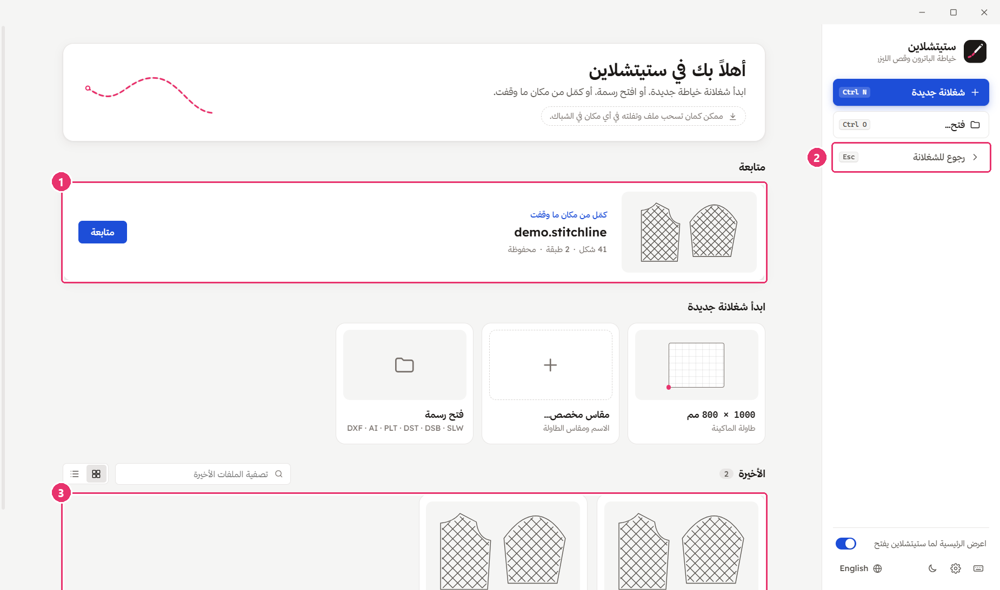
الصفحة الرئيسية بعد العمل على شغلانة
متابعة: صورة مصغرة للشغلانة المفتوحة مع عدد أشكالها وطبقاتها وحالة حفظها («محفوظة» أو «تعديلات غير محفوظة»). اضغط متابعة للعودة إليها.
رجوع للشغلانةEsc: يغلق الصفحة الرئيسية ويعيدك إلى نافذة العمل.
الملفات الأخيرة بصور مصغرة: اضغط على بطاقة لفتح الملف. يظهر على كل بطاقة نوع الملف (JOB لملفات الشغلانة، SLW، PLT…) ووقت آخر تعديل.
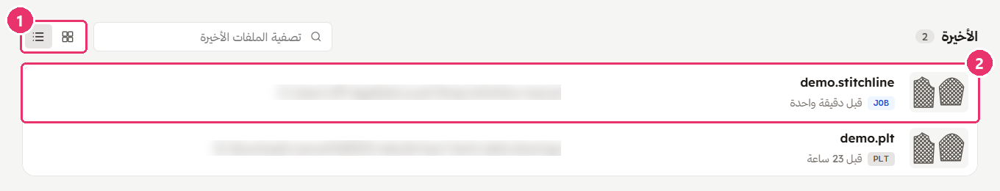
الملفات الأخيرة في عرض القائمة (تم إخفاء مسارات المجلدات في الصورة)
في عرض القائمة (1) يظهر أيضاً مسار المجلد الذي فيه كل ملف (2). لإزالة ملف من القائمة دون حذفه من الجهاز، مرّر المؤشر على بطاقته واضغط علامة × التي تظهر عليها.
ملاحظةإذا فتحت ملفاً أو بدأت شغلانة جديدة وفي الشغلانة الحالية تعديلات غير محفوظة، يسألك البرنامج أولاً هل تريد حفظها (انظر 11.3).
3.2نافذة العمل: نظرة عامة
نافذة العمل هي المكان الذي تجهّز فيه الشغلانة. في الوسط الرسمة، وحولها أشرطة ولوحات ثابتة:
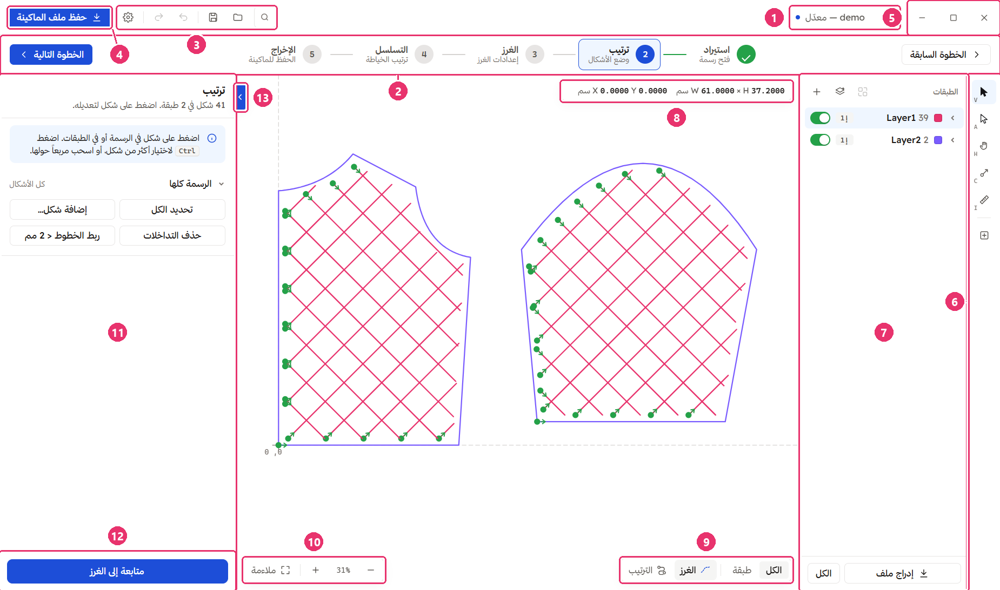
أجزاء نافذة العمل
الصفحة الرئيسية واسم الشغلانة: زر البيت يفتح الصفحة الرئيسية، وبجانبه اسم الشغلانة الحالية.
شريط الخطوات: المراحل الخمس (استيراد، ترتيب، الغرز، التسلسل، الإخراج) مع زري الخطوة السابقة والخطوة التالية (الفصل 4).
أزرار سريعة: البحث عن أداة، فتح، حفظ، تراجع، إعادة، الإعدادات.
حفظ ملف الماكينة: الزر الأزرق الرئيسي لحفظ ملف SLW.
أزرار النافذة: تصغير، تكبير/استعادة، إغلاق. للبرنامج شريط عنوان خاص به، ويمكنك سحب النافذة من أي مكان فارغ في الشريط العلوي.
لوحة الطبقات: الطبقات والأشكال التي فيها (الفصل 7).
المقاس والموضع: عرض W وارتفاع H المحدد (أو الرسمة كلها إن لم يكن هناك تحديد)، وموضع المؤشر X وY، كلها بالسنتيمتر، وعدد الأشكال المحددة.
شريط العرض:الكل / طبقة لعرض كل الطبقات أو الطبقة الحالية فقط (تبقى الأخرى باهتة)، والغرزCtrl+Y لإظهار نقاط الإبرة، والترتيبCtrl+H لإظهار أرقام ترتيب الخياطة على الرسمة.
لوحة المرحلة: تتغير محتوياتها حسب المرحلة المختارة، وفيها كل إعدادات تلك المرحلة. أقسامها قابلة للطي بالضغط على عنوان القسم، ويتذكر البرنامج الأقسام المفتوحة.
زر الانتقال للمرحلة التالية أسفل اللوحة، مثل متابعة إلى الغرز.
زر إخفاء لوحة المرحلةShift+Tab: يخفيها لتوسيع مساحة الرسمة، ويُظهرها مرة أخرى.
في منطقة الرسمة تظهر الأشكال بلون طبقتها، وعلى كل شكل نقطة خضراء وسهم يبيّنان بداية الخياطة واتجاهها. يظهر أصل الإحداثيات بعلامة 0, 0، ومستطيل متقطع بمقاس طاولة الماكينة. شبكة المليمترات خلف الرسمة مخفية افتراضياً، ويمكن إظهارها من الإعدادات (13.4).
الشريط العلوي
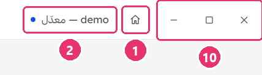
الشريط العلوي: الجانب الأيمن
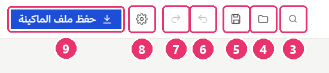
الشريط العلوي: الجانب الأيسر
الصفحة الرئيسيةCtrl+Shift+H.
اسم الشغلانة: اضغط عليه لتغييره. الاسم يُستخدم اسماً لملف الماكينة وملفات التصدير. النقطة الزرقاء وعبارة «معدّل» تعنيان وجود تعديلات غير محفوظة.
البحث عن أي أداةCtrl+K (الفصل 14).
فتحCtrl+O.
حفظ الشغلانةCtrl+S: يحفظ ملف .stitchline (الفصل 11).
تراجعCtrl+Z.
إعادةCtrl+Shift+Z. يكون الزران باهتين عندما لا يوجد ما يُتراجع عنه أو يُعاد.
الإعداداتCtrl+, (الفصل 13).
حفظ ملف الماكينةCtrl+Alt+E.
أزرار النافذة: تصغير، تكبير، إغلاق (Alt+F4).
شريط الخطوات
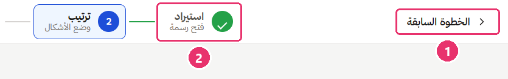
شريط الخطوات: الجانب الأيمن
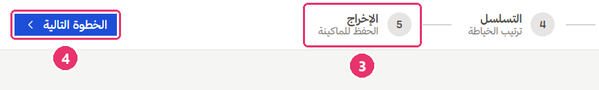
شريط الخطوات: الجانب الأيسر
الخطوة السابقةPage Up: يعود إلى المرحلة السابقة، ويكون باهتاً في المرحلة الأولى.
مرحلة منتهية: المراحل التي سبقت المرحلة الحالية تظهر بعلامة صح خضراء، ويتلون الخط الواصل بينها بالأخضر. تحت اسم كل مرحلة وصف قصير لها (مثل «فتح رسمة»).
مرحلة لم تبدأ بعد: رقمها رمادي. المرحلة الحالية مظللة بالأزرق. اضغط على أي مرحلة للانتقال إليها مباشرة، أو استخدم الأرقام 1…5.
الخطوة التاليةPage Down: ينقلك إلى المرحلة التالية. يكون باهتاً ما دامت الشغلانة فارغة. في المرحلة الأخيرة (الإخراج) يتحول اسمه إلى حفظ ملف الماكينة ويعمل عمل زر الحفظ.
نصيحةكل زر في البرنامج يعرض اسمه واختصاره عند إيقاف المؤشر فوقه. إذا كانت النافذة ضيقة يُخفي البرنامج الأوصاف القصيرة تحت أسماء المراحل ونص زري السابق والتالي، وتبقى الأيقونات.
ملاءمة أو Ctrl+0. يعيد البرنامج الملاءمة تلقائياً عند تغيير حجم النافذة ما لم تكن قد كبّرت أو حرّكت المنظر بنفسك.
الحجم الحقيقي (100%)
Ctrl+1: المليمتر على الشاشة يقارب المليمتر الحقيقي على شاشة عادية.
تحريك المنظر
أداة التحريك H، أو الضغط مع الاستمرار على Space والسحب، أو السحب بزر الفأرة الأوسط.
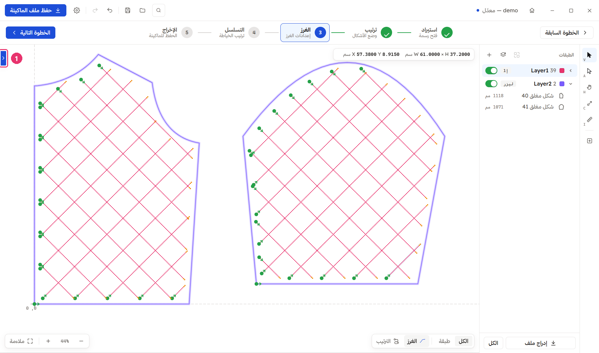
بعد إخفاء لوحة المرحلة
لإفساح مساحة أكبر للرسمة اضغط السهم الصغير على حافة لوحة المرحلة (1) أو Shift+Tab. اضغط مرة أخرى لإظهارها. ويمكن أيضاً إخفاء لوحة الطبقات وشرائط العرض والتكبير والمقاس من الإعدادات (13.4).
3.5الإشعارات ومؤشر الانشغال
بعد كل عملية مهمة يظهر في أسفل منتصف النافذة إشعار قصير يختفي وحده بعد ثوانٍ:
إشعار داكن بعلامة صح خضراء: نجحت العملية، مثل «الطبقة دي بقت قص ليزر (الإبرة 3)» أو «تم حفظ ملف الماكينة…».
إشعار بعلامة دائرة حمراء: لم تتم العملية، ويوضح السبب، مثل «حدد شكلاً أولاً — اضغط عليه في الرسمة أو في الطبقات.».
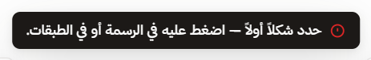
مثال لإشعار خطأ: محاولة تنفيذ أمر يحتاج شكلاً محدداً
إذا استغرقت عملية أكثر من لحظة يظهر في الأسفل مؤشر دوّار مع عبارة مثل «جاري العمل…» أو «في انتظار اسم الملف…» (عندما تكون نافذة حفظ ويندوز مفتوحة).
4مراحل العمل الخمس
يقسّم البرنامج تجهيز الشغلانة إلى خمس مراحل تظهر في شريط الخطوات تحت الشريط العلوي. كل مرحلة لها لوحة إعدادات خاصة على جانب النافذة، وتنتقل بينها بالضغط على المرحلة أو بزري الخطوة السابقة والتالية.
المرحلة (ووصفها في الشريط)
المفتاح
ما تفعله فيها
الفصل
1 استيراد فتح رسمة
1
تفتح الرسمة أو تدرجها، وتضبط طريقة قراءتها: التنظيف عند الفتح، والدقة، والمقياس، ومقاس طاولة الماكينة.
ملاحظةالترتيب مقترح وليس إلزامياً؛ يمكنك العودة لأي مرحلة في أي وقت وتعديل ما فيها، وكل التعديلات تُطبَّق فوراً على الرسمة والإحصاءات. في مراحل الغرز والتسلسل والإخراج تظهر نقاط الإبرة على الرسمة (إذا كان زر الغرز في شريط العرض مفعّلاً).
للتنقل بالترتيب استخدم الخطوة التاليةPage Down والخطوة السابقةPage Up. عند فتح ملف وأنت في مرحلة الاستيراد ينتقل البرنامج تلقائياً إلى مرحلة ترتيب، ويحفظ البرنامج آخر مرحلة كنت فيها ليعود إليها في المرة القادمة.
نصيحةالنقر المزدوج على أي شكل في الرسمة يحدده وينقلك إلى مرحلة الترتيب مباشرة.
5مرحلة الاستيراد: فتح الرسمة
في هذه المرحلة تبدأ شغلانة جديدة أو تفتح رسمة، وتحدد كيف يقرأ البرنامج الرسمة: تنظيفها عند الفتح، ودقة ملفات الرسم، والمقياس، ومقاس طاولة الماكينة.
5.1بدء شغلانة جديدة
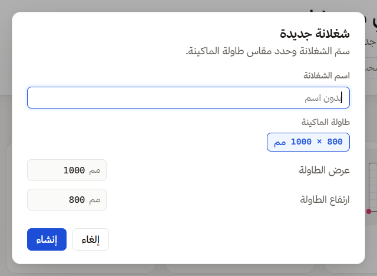
نافذة «شغلانة جديدة»
اضغط شغلانة جديدة في الصفحة الرئيسية أو Ctrl+N.
اكتب اسم الشغلانة (اختياري؛ يمكن تغييره لاحقاً).
اختر مقاس طاولة الماكينة من الأزرار الجاهزة، أو اكتب عرض الطاولة وارتفاع الطاولة بالمليمتر.
اضغط إنشاء أو Enter.
تفتح نافذة العمل على مرحلة الاستيراد، وفي وسط الرسمة رسالة «ابدأ شغلانة خياطة» مع زري فتح رسمة… وارسم شكلاً.
يجب أن يكون مقاس الطاولة أكبر من صفر. يتذكر البرنامج المقاسات التي استخدمتها ويعرضها أزراراً جاهزة في المرات القادمة.
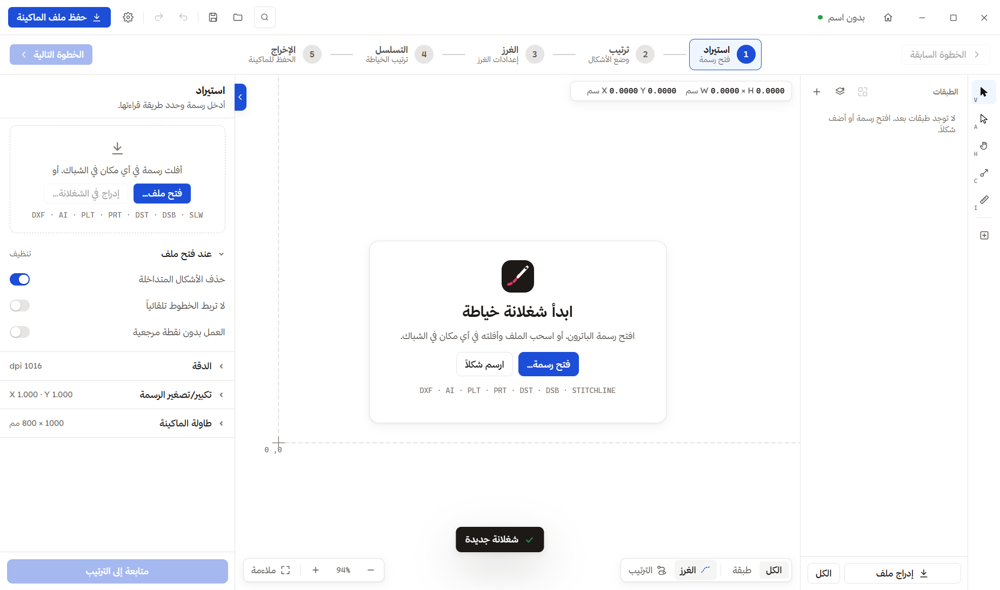
شغلانة جديدة فارغة
5.2فتح رسمة أو شغلانة
توجد عدة طرق لفتح ملف، وكلها تؤدي إلى النتيجة نفسها:
زر فتح ملف… في لوحة الاستيراد، أو زر المجلد في الشريط العلوي، أو Ctrl+O: تظهر نافذة الفتح في ويندوز بعنوان «Open a drawing or job».
السحب والإفلات: اسحب الملف من مستكشف ويندوز وأفلته في أي مكان داخل نافذة البرنامج.
الملفات الأخيرة: من الصفحة الرئيسية، أو من قسم الملفات الأخيرة في لوحة الاستيراد.
الصيغة
الامتداد
ملاحظات
أوتوكاد
.dxf
كل طبقة في الملف تصبح طبقة في البرنامج.
إليستريتور
.ai
إن لم يجد البرنامج مسارات في الملف، احفظه من إليستريتور بصيغة «Illustrator 8» أو DXF.
تظهر الرسمة في الوسط مُلاءَمة للشاشة، وينتقل البرنامج إلى مرحلة الترتيب، ويظهر إشعار مثل «تم فتح demo.plt · 41 شكل»، وقد يُضاف إليه عدد التداخلات المحذوفة والخطوط المربوطة.
تنبيهفتح ملف يستبدل الشغلانة الحالية. إن كانت فيها تعديلات غير محفوظة يسألك البرنامج أولاً (11.3). إذا أردت إضافة رسمة إلى الشغلانة الحالية فاستخدم «الإدراج» بدلاً من الفتح.
5.3إدراج رسمة في الشغلانة الحالية
زر إدراج في الشغلانة… في لوحة الاستيراد، أو إدراج ملف أسفل لوحة الطبقات، أو Ctrl+Shift+P: يختار رسمة ويضيف أشكالها إلى الشغلانة المفتوحة دون حذف ما فيها، ويظهر إشعار بعدد الأشكال المُدرجة. يكون الزر باهتاً إذا كانت الشغلانة فارغة؛ استخدم الفتح في هذه الحالة.
5.4لوحة الاستيراد بالتفصيل
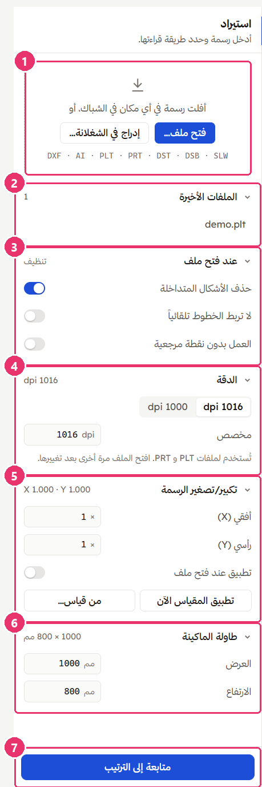
لوحة الاستيراد بكل أقسامها
منطقة الفتح:فتح ملف… وإدراج في الشغلانة… وقائمة الصيغ المقبولة. يمكنك أيضاً إفلات الملف هنا.
طاولة الماكينة: العرض والارتفاع بالمليمتر، انظر 5.7.
متابعة إلى الترتيب: يكون باهتاً حتى توجد أشكال في الشغلانة.
5.5الدقة (dpi)
ملفات PLT وPRT لا تحمل وحدة قياس واضحة، فيحتاج البرنامج أن يعرف كم نقطة في البوصة استُخدمت عند رسمها. الافتراضي 1016 dpi، والخيار الآخر 1000 dpi، ويمكن كتابة قيمة مخصص.
تنبيهإذا ظهرت رسمة PLT بمقاس خاطئ قليلاً (أكبر أو أصغر بنحو 1.6%)، غيّر الدقة ثم افتح الملف مرة أخرى؛ التغيير لا يُطبَّق على الرسمة المفتوحة. هذه الدقة تُستخدم أيضاً عند تصدير ملفات PLT.
5.6تكبير وتصغير الرسمة، والمقياس من قياس فعلي
في قسم تكبير/تصغير الرسمة حقلان: أفقي (X) ورأسي (Y)، والقيمة 1 تعني بلا تغيير (مثلاً 1.02 تكبّر 2%).
تطبيق المقياس الآن: يطبّق المعاملين على الشغلانة الحالية كلها (يمكن التراجع عنه).
تطبيق عند فتح ملف: يطبّقهما تلقائياً على كل رسمة تفتحها بعد ذلك.
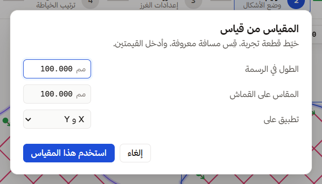
نافذة «المقياس من قياس»
إذا خرجت القطع المخيطة أصغر أو أكبر من المطلوب، يحسب البرنامج المعامل الصحيح من قياس فعلي:
خِط قطعة تجريبية، وقِس عليها مسافة معروفة.
اضغط من قياس….
اكتب الطول في الرسمة والمقاس على القماش، واختر تطبيق على: X و Y، أو X فقط، أو Y فقط.
اضغط استخدم هذا المقياس.
تتغير قيمتا المقياس، ويظهر إشعار يذكّرك بالضغط على تطبيق المقياس الآن لتطبيقه على الشغلانة الحالية.
5.7طاولة الماكينة
مقاس طاولة الماكينة (الافتراضي 1000 × 800 مم) يُرسم مستطيلاً متقطعاً على الرسمة انطلاقاً من نقطة أصل الماكينة، لتتأكد أن الأشكال كلها داخل مساحة عمل الماكينة. غيّره من قسم طاولة الماكينة أو عند إنشاء شغلانة جديدة.
6مرحلة الترتيب: تعديل الأشكال
في هذه المرحلة تحدد الأشكال وتحركها وتدوّرها وتعكسها وتغيّر مقاسها، وتحدد من أين تبدأ خياطة كل شكل وفي أي اتجاه، وتنظف الرسمة من العيوب.
6.1تحديد الأشكال
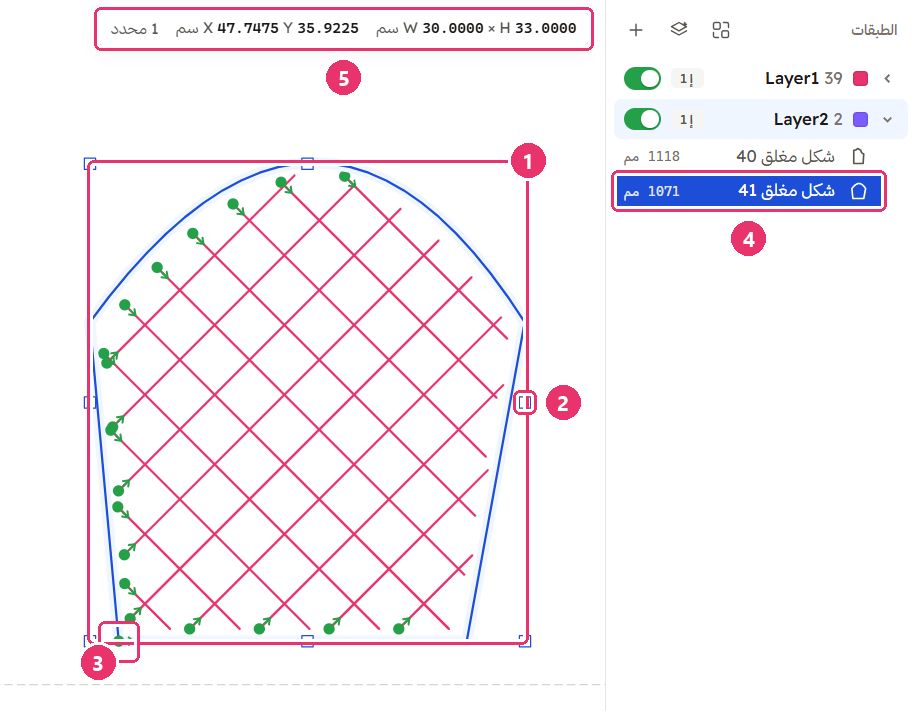
شكل محدد بأداة التحديد
إطار التحديد: يحيط بالأشكال المحددة بأداة التحديد V. اسحب من داخله لتحريك المحدد.
مقابض تغيير المقاس: ثمانية مربعات على الإطار. اسحب أحدها لتغيير المقاس؛ مع Shift تبقى النسب ثابتة، ومع Alt يتغير المقاس من المركز.
نقطة البداية والاتجاه: النقطة الخضراء هي مكان بدء الخياطة، والسهم يبيّن اتجاهها.
الشكل المحدد في لوحة الطبقات يظهر مظللاً بالأزرق.
عدد المحدد ومقاسه وموضعه.
لتحقيق هذا
افعل هذا
تحديد شكل واحد
اضغط على خطه في الرسمة، أو على اسمه في لوحة الطبقات.
إضافة شكل للتحديد أو إزالته
Ctrl + ضغطة. Shift + ضغطة يضيف فقط.
تحديد مجموعة بالمستطيل
اسحب في مكان فارغ؛ يُحدد كل شكل يلمسه المستطيل. مع Alt تُحدد فقط الأشكال الواقعة داخله بالكامل، ومع Ctrl أو Shift يُضاف التحديد إلى السابق.
تحديد الكل / إلغاء التحديد
Ctrl+A / Ctrl+Shift+A أو Esc أو ضغطة في مكان فارغ.
نسخ أثناء السحب
اضغط Alt أثناء سحب الأشكال: يبقى الأصل مكانه وتتحرك نسخة.
إلغاء سحب جارٍ
Esc قبل ترك زر الفأرة.
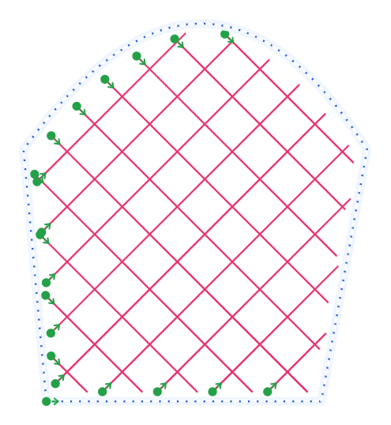
شكل محدد بأداة التحديد المباشر
أداة التحديد المباشرA (السهم الأبيض) تحدد مساراً واحداً بعينه وتحركه فقط، دون إطار أو مقابض. يظهر المسار المحدد بخط منقط داخل توهج أزرق. استخدمها عندما تكون الأشكال متقاربة وتريد تحريك شكل واحد دون غيره.
الضغط على شكل في الرسمة يجعل طبقته هي الطبقة الحالية، والنقر المزدوج عليه يحدده وينقلك إلى مرحلة الترتيب.
6.2لوحة الترتيب دون تحديد
عندما لا يكون أي شكل محدداً، تعرض اللوحة عدد الأشكال والطبقات وقسم الرسمة كلها (انظر شكل نافذة العمل) وفيه:
تحديد الكل وإضافة شكل….
حذف التداخلات: يحذف الأشكال المكررة فوق بعضها في الرسمة كلها، ويظهر إشعار بعددها.
ربط الخطوط < 2 مم: يصل الخطوط التي تقل المسافة بين طرفيها عن 2 مم في شكل واحد.
6.3التحريك والتدوير والعكس وتغيير المقاس
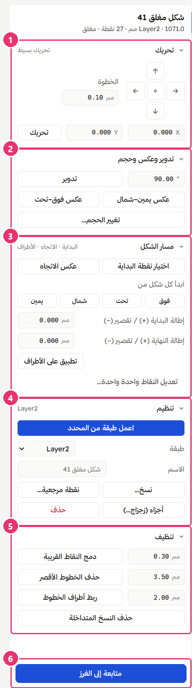
لوحة الترتيب عند تحديد شكل، بكل أقسامها
عند تحديد شكل يظهر في رأس اللوحة اسمه وطبقته وطوله وعدد نقاطه وهل هو مغلق أو مفتوح، وتحته الأقسام:
تحريك: أزرار الأسهم تحرك المحدد بمقدار الخطوة (الافتراضية 0.10 مم)، والزر الأوسط ينقله إلى نقطة الأصل (0، 0). اكتب مسافة في X وY واضغط تحريك لتحريك دقيق. أسهم لوحة المفاتيح تحرك بمقدار الخطوة، ومع Shift بعشرة أضعافها، وEnter ينقل المؤشر إلى حقل المسافة.
تدوير وعكس وحجم: اكتب الزاوية (الافتراضية 90°) واضغط تدوير (المفتاح R ينقلك إلى حقل الزاوية)؛ عكس يمين–شمالO وعكس فوق–تحتShift+O؛ وتغيير الحجم…S.
نصيحةCtrl+D يكرر آخر تحريك أو تدوير أو عكس أو تغيير مقاس على التحديد الحالي.
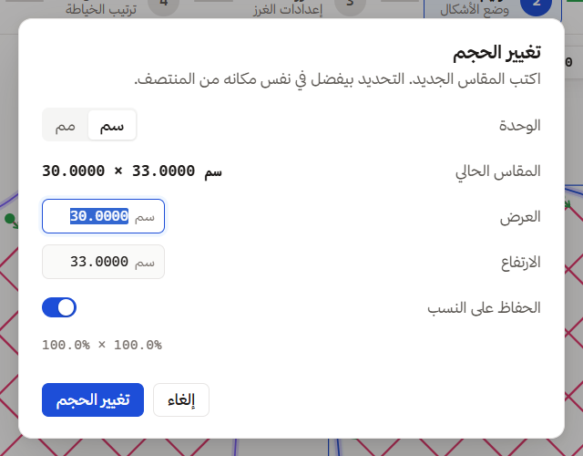
نافذة «تغيير الحجم»
تغيير المقاس بدقة: اضغط S أو تغيير الحجم…. تعرض النافذة المقاس الحالي، واكتب العرض والارتفاع الجديدين بوحدة سم أو مم. مع تفعيل الحفاظ على النسب يتغير الحقل الآخر تلقائياً، وتعرض النافذة نسبة التغيير المئوية. يبقى مركز التحديد في مكانه.
للخط المستقيم الأفقي أو الرأسي يكون أحد الحقلين معطلاً لأنه لا عرض له أو لا ارتفاع.
6.4مسار الشكل: البداية والاتجاه والأطراف
تبدأ الماكينة خياطة كل شكل من نقطة بدايته وفي اتجاهه. يمكنك التحكم فيهما من قسم مسار الشكل:
اختيار نقطة البداية (الأداة C): اضغط على الشكل في المكان الذي تريد أن تبدأ الخياطة منه. يظهر إشعار «تم تحديد نقطة البداية». البديل: ضغطة يمين على الشكل ثم ابدأ الخياطة من هنا.
عكس الاتجاهCtrl+Alt+R: يجعل الخياطة تسير في الاتجاه المعاكس.
ابدأ كل شكل من: فوق / تحت / شمال / يمين — ينقل بداية كل شكل محدد إلى طرفه العلوي أو السفلي أو الأيسر أو الأيمن.
إطالة البداية (+) / تقصير (−) وإطالة النهاية (+) / تقصير (−): قيمة موجبة تمد الطرف، وسالبة تقصّره، ثم اضغط تطبيق على الأطراف.
تعديل النقاط واحدة واحدة…: يظهر عند تحديد شكل واحد.
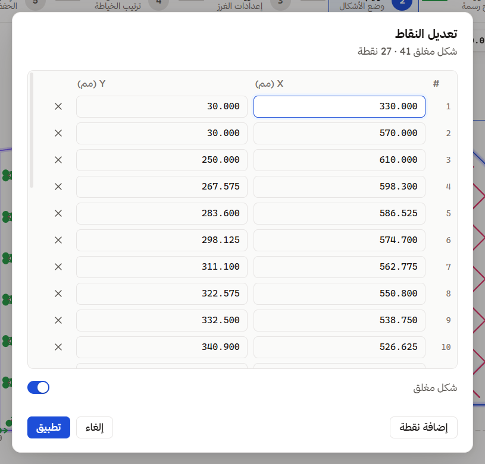
نافذة «تعديل النقاط»
في نافذة تعديل النقاط جدول بكل نقاط الشكل وإحداثياتها X وY بالمليمتر. يمكنك تعديل أي رقم، وحذف نقطة بزر ×، وإضافة نقطة بزر إضافة نقطة (تُضاف بعد آخر نقطة بإزاحة 5 مم)، وتحويل الشكل إلى مغلق أو مفتوح بمفتاح شكل مغلق. اضغط تطبيق للحفظ.
يعرض الجدول أول 2000 نقطة فقط في الأشكال الكبيرة جداً. كل خانة يجب أن تحتوي رقماً، وإلا تظهر رسالة «كل نقطة تحتاج رقماً لـ X و Y.».
6.5التنظيم: الطبقة والاسم والنسخ والأجزاء
اعمل طبقة من المحددCtrl+G: ينقل الأشكال المحددة إلى طبقة جديدة (7.3).
طبقة: قائمة لنقل المحدد إلى طبقة أخرى، وآخر خيار فيها طبقة جديدة….
الاسم: اسم خاص للشكل (يظهر عند تحديد شكل واحد).
نسخ… ونقطة مرجعية… وأجزاء (زجزاج…) وحذفDelete.
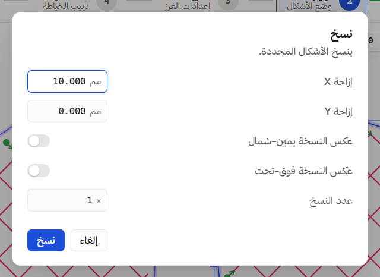
نافذة «نسخ»
نسخ الأشكال بدقة: حدد إزاحة X وإزاحة Y بالمليمتر (الافتراضي 10 و0)، ويمكنك عكس النسخة يميناً–شمالاً أو فوق–تحت، واختيار عدد النسخ (حتى 200؛ كل نسخة تُزاح عن السابقة). اضغط نسخ. تُحدد النسخ الجديدة بعد إنشائها.
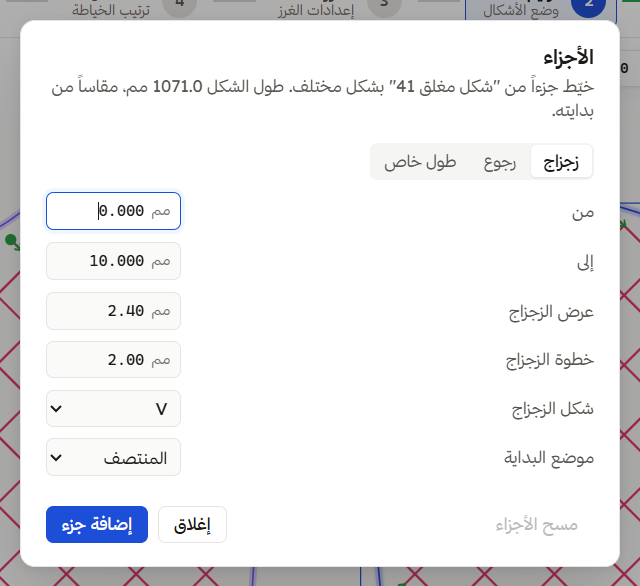
نافذة «الأجزاء»
الأجزاء تجعل جزءاً من الشكل يُخاط بطريقة مختلفة. حدد شكلاً واحداً، ثم اختر النوع:
زجزاج: غرز متعرجة، ولها عرض الزجزاج وخطوة الزجزاج وشكل الزجزاج (V أو W) وموضع البداية.
رجوع: غرز رجوع (تقفيل) في هذا الجزء.
طول خاص: يُخاط بطول الغرزة الخاص المحدد في مرحلة الغرز.
حدد بداية الجزء ونهايته بالمليمتر من وإلى مقيسة من بداية الشكل (تذكر النافذة طول الشكل الكلي)، ثم إضافة جزء. تبقى النافذة مفتوحة لإضافة أجزاء أخرى، وتعرض قائمة الأجزاء الحالية. مسح الأجزاء يحذفها كلها. تظهر الأجزاء على الرسمة بخط عريض شفاف بلونها.
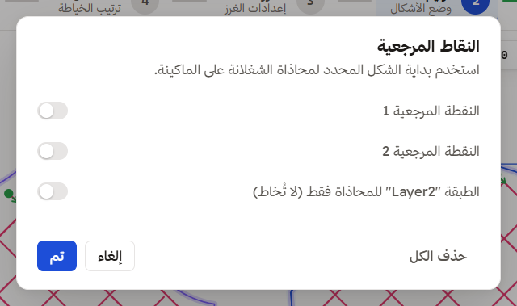
نافذة «النقاط المرجعية»
النقاط المرجعية تستخدم بداية الشكل المحدد لمحاذاة الشغلانة على الماكينة: فعّل النقطة المرجعية 1 أو 2. تظهر النقطة على الرسمة بعلامة حمراء ومعها R1 أو R2. ويمكن جعل طبقة الشكل للمحاذاة فقط فلا تُخاط، وتظهر الطبقة في القائمة بكلمة «align». حذف الكل يلغي النقاط المرجعية جميعها.
6.6تنظيف الرسمة
الرسومات القادمة من برامج أخرى قد تحتوي نقاطاً مكررة أو خطوطاً قصيرة جداً أو خطوطاً مقطّعة. في قسم تنظيف، اكتب القيمة بالمليمتر ثم اضغط الزر، وكلها تعمل على الأشكال المحددة ويظهر إشعار بالنتيجة:
الزر
القيمة الافتراضية
ما يفعله
دمج النقاط القريبة
0.30
يدمج النقاط المتتالية الأقرب من هذه المسافة في نقطة واحدة.
حذف الخطوط الأقصر
3.50
يحذف الخطوط التي طولها أقل من هذه القيمة.
ربط أطراف الخطوطCtrl+J
2.00
يصل الخطوط التي تقترب أطرافها إلى هذه المسافة في شكل واحد. إن لم يجد أطرافاً قريبة تظهر رسالة بذلك.
حذف النسخ المتداخلة
—
يحذف الأشكال المكررة فوق بعضها.
6.7إضافة شكل جديد
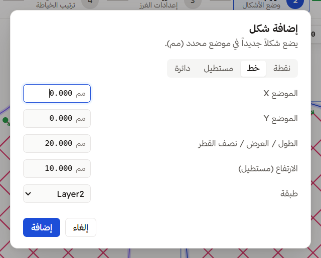
نافذة «إضافة شكل»
اضغط M أو زر + في شريط الأدوات أو في لوحة الطبقات، أو ضغطة يمين في مكان فارغ ثم إضافة شكل هنا… (يُملأ الموضع بمكان الضغطة).
اختر النوع: نقطة أو خط أو مستطيل أو دائرة.
اكتب الموضع X والموضع Y بالمليمتر.
اكتب الطول / العرض / نصف القطر (حسب النوع)، والارتفاع (مستطيل) للمستطيل.
اختر طبقة ثم إضافة.
يظهر الشكل في الرسمة ويُحدد، مع إشعار «تمت إضافة الشكل».
6.8القوائم المختصرة والحافظة
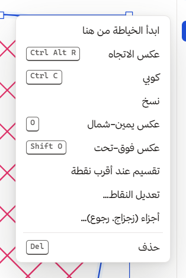
القائمة المختصرة لشكل
ضغطة يمين على شكل تحدده وتعرض: ابدأ الخياطة من هنا (من النقطة التي ضغطت عليها)، عكس الاتجاه، كوبي (نسخ إلى الحافظة)، نسخ (نسخة مزاحة 5 مم مباشرة)، عكس يمين–شمال، عكس فوق–تحت، تقسيم عند أقرب نقطة (يقسم الشكل إلى اثنين عند أقرب نقطة من الضغطة)، تعديل النقاط…، أجزاء (زجزاج، رجوع)…، وحذف.
ضغطة يمين في مكان فارغ تعرض: إضافة شكل هنا…، ولزق هنا (إذا نسخت شيئاً)، وملاءمة الرسمة، وتحديد الكل.
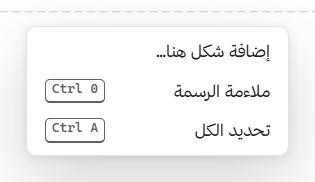
القائمة المختصرة في مكان فارغ
الحافظة داخل البرنامج:Ctrl+C ينسخ المحدد، وCtrl+X يقصه، وCtrl+V يلصقه في منتصف المنظر الحالي، وCtrl+F يلصقه في مكانه نفسه ويُخاط آخراً، وCtrl+B يلصقه في مكانه ويُخاط أولاً. هذه الحافظة خاصة بالبرنامج ولا تُشارك مع برامج أخرى.
6.9أداة القياس
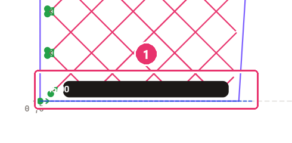
أداة القياس أثناء السحب
اضغط I ثم اسحب من نقطة إلى أخرى. يُرسم خط متقطع بينهما، ويظهر فوقه شريط داكن مخصص لعرض المسافة بالمليمتر والزاوية وفرق X وY. اضغط Esc للخروج.
مشكلة معروفةفي الواجهة العربية تُكتب قراءة القياس خارج الشريط الداكن فلا تُقرأ (كما في الصورة). للقراءة بدّل اللغة مؤقتاً إلى الإنجليزية، أو استخدم بديلاً: حدد الشكل واقرأ عرضه وارتفاعه في شريط المقاس أعلى الرسمة.
7الطبقات
الطبقة مجموعة أشكال تشترك في الإبرة وإعدادات الغرز واللون. مثلاً: طبقة للتطريز على الإبرة 1، وطبقة لخطوط القص على الإبرة 3 (الليزر). عند فتح رسمة، تُنشأ الطبقات من طبقات ملف DXF أو من أقلام ملف PLT.
7.1لوحة الطبقات
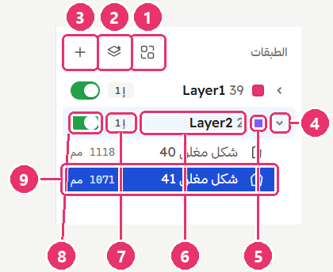
لوحة الطبقات وأجزاء صف الطبقة
اعمل طبقة من المحددCtrl+G (باهت إن لم يكن هناك تحديد).
طبقة جديدة فارغة: يطلب اسماً للطبقة (الافتراضي «Layer 3» مثلاً).
إضافة شكل.
السهم: يفتح الطبقة لعرض أشكالها أو يطويها.
لون الطبقة: اضغط عليه لاختيار لون آخر. هو لون الأشكال على الرسمة فقط، ولا يؤثر في ملف الماكينة.
اسم الطبقة وعدد أشكالها. نقرة مزدوجة على الاسم لتغييره، ثم Enter للحفظ أو Esc للإلغاء.
الإبرة: «إ1» تعني الإبرة 1، و«ليزر» تعني طبقة قص بالليزر.
مفتاح الخياطة: عند إيقافه لا تُكتب الطبقة في ملف الماكينة، وتظهر أشكالها باهتة بخط متقطع رمادي (مفيد لخطوط المساعدة).
صف الشكل: صورة مصغرة واسم الشكل وطوله بالمليمتر. الأشكال مرتبة حسب ترتيب الخياطة. اضغط لتحديد الشكل (مع Ctrl لإضافته إلى التحديد).
الضغط على صف طبقة يجعلها الطبقة الحالية (تظهر بخلفية زرقاء خفيفة)، وهي الطبقة التي تُعرض إعداداتها في مرحلة الغرز، وتُضاف إليها الأشكال الملصقة. إذا كانت في الطبقة أكثر من 300 شكل تُعرض أول 300 فقط مع ملاحظة بعدد الباقي، ويمكنك تحديد الباقي من الرسمة.
مشكلة معروفةالضغط على زر الإبرة في صف الطبقة (7) يُفترض أن يفتح قائمة لاختيار الإبرة 1 أو 2 أو 3، لكن القائمة تُغلق فور فتحها في هذا الإصدار. لتغيير الإبرة استخدم قائمة رأس الخياطة في مرحلة الغرز (8.1)، أو اختر الإبرة عند إنشاء الطبقة من المحدد.
7.2القائمة المختصرة للطبقة وسحب الطبقات
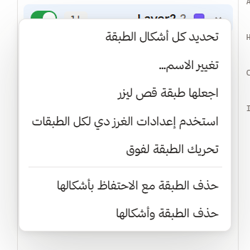
القائمة المختصرة للطبقة
ضغطة يمين على صف الطبقة تعرض:
تحديد كل أشكال الطبقة.
تغيير الاسم….
اجعلها طبقة قص ليزر، أو اجعلها طبقة خياطة إن كانت ليزراً (8.5).
استخدم إعدادات الغرز دي لكل الطبقات (لطبقات الخياطة فقط، 8.4).
تحريك الطبقة لفوق / لتحت: يغيّر ترتيب الطبقات، وهو الترتيب الذي يتبعه أمر «طبقة بطبقة» في مرحلة التسلسل.
حذف الطبقة مع الاحتفاظ بأشكالهاCtrl+Shift+G: تُنقل أشكالها إلى الطبقة التي فوقها (لا يظهر إن كانت الطبقة الوحيدة).
حذف الطبقة وأشكالها: يطلب تأكيداً، ويمكن التراجع عنه.
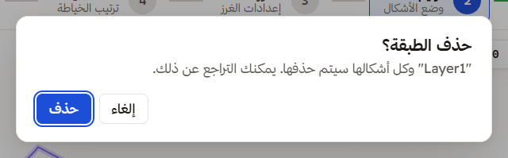
تأكيد حذف الطبقة
السحب في لوحة الطبقات:
اسحب صف شكل وأفلته فوق شكل آخر أو تحته لتغيير ترتيب خياطته. إذا أفلته في طبقة أخرى يُنقل إليها. إذا كان الشكل ضمن تحديد يتحرك التحديد كله.
أفلت الشكل على صف الطبقة نفسه ليوضع في آخر تلك الطبقة.
اسحب صف الطبقة لتغيير ترتيب الطبقات. النصف العلوي من الصف يعني «فوقه» والنصف السفلي «تحته».
تنتقل الأشكال إلى الطبقة الجديدة وتصبح هي الطبقة الحالية، مع إشعار «تم عمل الطبقة».
8مرحلة الغرز وقص الليزر
هنا تحدد كيف تُخاط كل طبقة: طول الغرزة، والرجوع في البداية والنهاية، ومعالجة الأشكال المغلقة والزوايا، أو تجعل الطبقة طبقة قص بالليزر. الإعدادات تخص الطبقة المختارة وتُطبَّق على كل أشكالها.
8.1الإعدادات الأساسية للطبقة
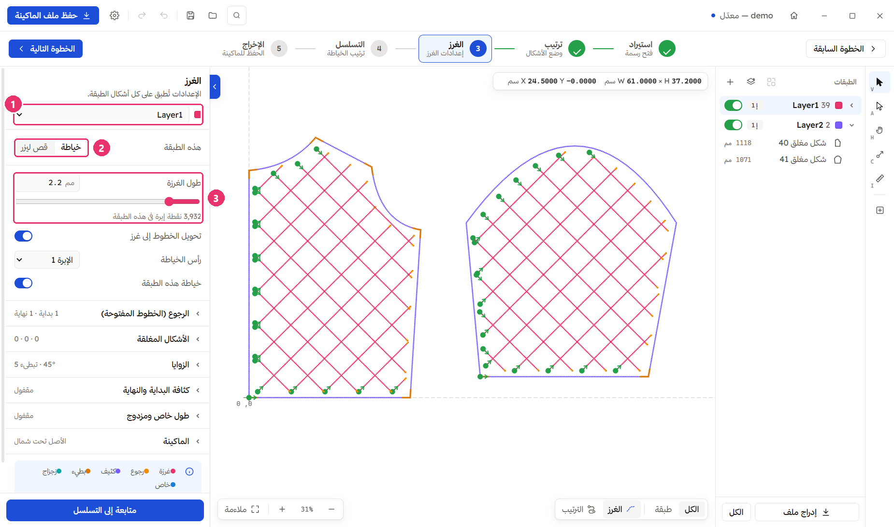
مرحلة الغرز
اختيار الطبقة: القائمة في رأس اللوحة تحدد الطبقة التي تعدّل إعداداتها، وبجانبها لونها.
طول الغرزة: اكتب القيمة بالمليمتر أو حرّك الشريط (من 0.5 إلى 12 مم، الافتراضي 2.2). تحته عدد نقاط الإبرة في الطبقة، ويتغير فوراً. الرسمة تعرض نقاط الإبرة بلون الطبقة.
وتحت طول الغرزة:
تحويل الخطوط إلى غرز (مفعّل افتراضياً): يقسّم البرنامج كل خط إلى غرز بالطول المحدد. عند إيقافه تخيط الماكينة كل خط بطول غرزتها هي.
رأس الخياطة: الإبرة 1 أو 2 أو 3.
خياطة هذه الطبقة: المفتاح نفسه الموجود في لوحة الطبقات.
نصيحةعند كتابة رقم في أي حقل، يُحفظ عند الضغط على Enter أو Tab أو الانتقال إلى حقل آخر. يمكن استخدام الفاصلة أو النقطة للكسور العشرية.
8.2أقسام لوحة الغرز
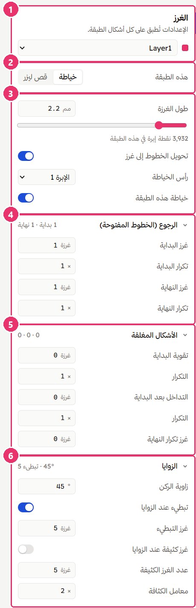
لوحة الغرز (الجزء الأول)
رأس اللوحة واختيار الطبقة.
نوع الطبقة: خياطة أو قص ليزر.
الإعدادات الأساسية (8.1).
الرجوع (الخطوط المفتوحة): غرز تقفيل في بداية الخطوط المفتوحة ونهايتها حتى لا يُفك الخيط. غرز البداية وغرز النهاية عدد الغرز التي ترجع عليها الإبرة (الافتراضي 1)، وتكرار البداية وتكرار النهاية عدد مرات الذهاب والعودة (الافتراضي 1).
الأشكال المغلقة:تقوية البداية وتكرارها، والتداخل بعد البداية (عدد الغرز التي تكمل بعد العودة إلى نقطة البداية) وتكراره، وغرز تكرار النهاية. القيم الافتراضية صفر.
الزوايا:زاوية الركن (الافتراضي 45°): أي انعطاف أحدّ منها يُعامل كركن. تبطيء عند الزوايا (مفعّل) مع غرز التبطيء (5)، وغرز كثيفة عند الزوايا (غير مفعّل) مع عدد الغرز الكثيفة (5) ومعامل الكثافة (2: الغرزة بنصف الطول).
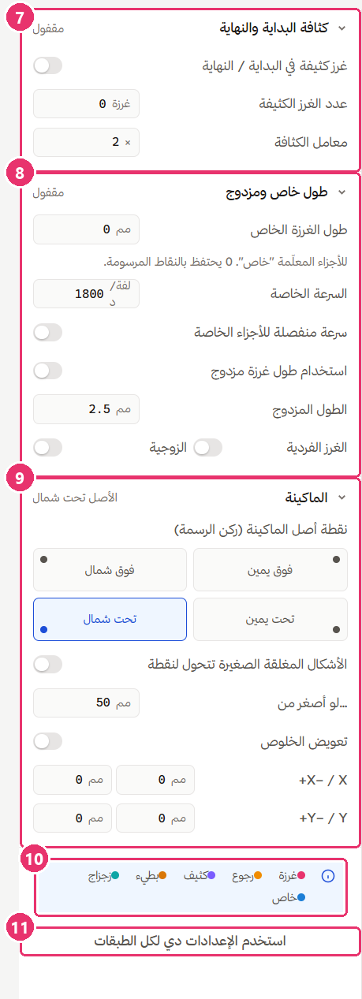
لوحة الغرز (الجزء الثاني)
كثافة البداية والنهاية:غرز كثيفة في البداية / النهاية مع عددها ومعامل كثافتها.
طول خاص ومزدوج:طول الغرزة الخاص للأجزاء المعلمة «طول خاص» (القيمة 0 تحتفظ بنقاط الرسمة كما هي)، والسرعة الخاصة (الافتراضي 1800 لفة/د) مع سرعة منفصلة للأجزاء الخاصة. واستخدام طول غرزة مزدوج مع الطول المزدوج (2.5 مم) وتطبيقه على الغرز الفردية أو الزوجية.
الماكينة: انظر 8.3. هذه الإعدادات للشغلانة كلها وليست للطبقة فقط.
دليل الألوان: ألوان نقاط الإبرة على الرسمة: غرزة (لون الطبقة)، رجوع (برتقالي)، كثيف (بنفسجي)، بطيء (كهرماني)، زجزاج (فيروزي)، خاص (أزرق).
استخدم الإعدادات دي لكل الطبقات (8.4).
8.3إعدادات الماكينة
نقطة أصل الماكينة (ركن الرسمة): فوق يمين أو فوق شمال أو تحت يمين أو تحت شمال (الافتراضي). الإحداثيات في ملف الماكينة تُقاس من هذا الركن، ويظهر على الرسمة بعلامة 0, 0 ومنه تُرسم الطاولة. اختر الركن الذي تبدأ منه ماكينتك.
الأشكال المغلقة الصغيرة تتحول لنقطة مع …لو أصغر من (50 مم): كل شكل مغلق أصغر من هذا المقاس يُكتب نقطة واحدة.
تعويض الخلوص: لتعويض الخلوص الميكانيكي في محاور الماكينة؛ أدخل قيمة التعويض بالمليمتر لكل اتجاه: X− وX+ وY− وY+.
تنبيهاترك إعدادات الماكينة على قيمها الافتراضية ما لم تعرف القيم المناسبة لماكينتك؛ تغيير نقطة الأصل أو تعويض الخلوص يغيّر مواضع الخياطة الفعلية.
8.4نسخ إعدادات الغرز لكل الطبقات
زر استخدم الإعدادات دي لكل الطبقات (أو من القائمة المختصرة للطبقة) ينسخ إعدادات الغرز من الطبقة الحالية إلى كل طبقات الخياطة الأخرى، بعد رسالة تأكيد تذكر عدد الطبقات التي ستتغير. طبقات الليزر لا تتأثر، والأمر غير متاح من طبقة ليزر. إن كانت كل الطبقات تستخدم الإعدادات نفسها يظهر إشعار بذلك ولا يتغير شيء. يمكن التراجع عن النسخ.
8.5طبقة قص الليزر
في الماكينات المزودة برأس ليزر على الإبرة 3، يمكن جعل طبقة كاملة طبقة قص: الليزر يمر على كل خط مرة واحدة، بلا غرز ولا رجوع ولا تداخل.
في مرحلة الغرز اختر الطبقة من القائمة أعلى اللوحة.
اضغط قص ليزر بجوار هذه الطبقة (أو من القائمة المختصرة للطبقة: اجعلها طبقة قص ليزر).
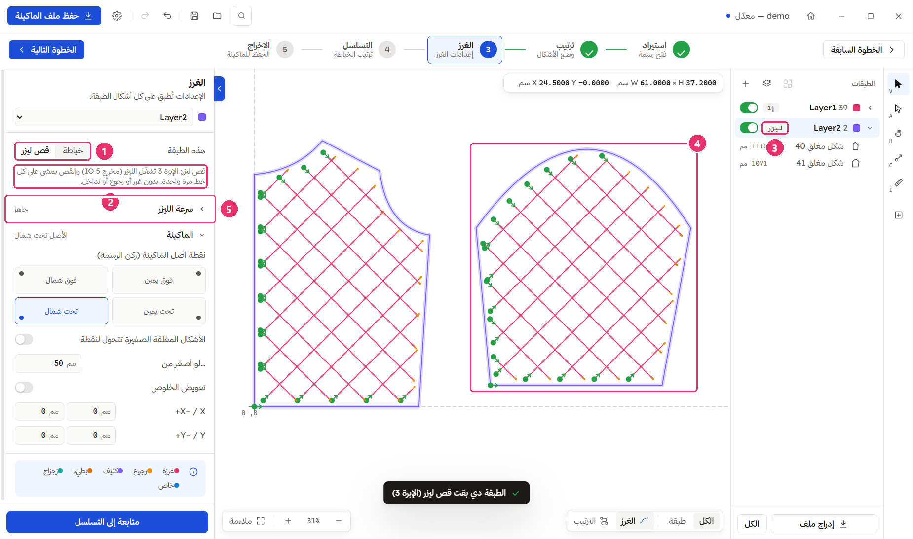
طبقة الخطوط الخارجية بعد جعلها قص ليزر
نوع الطبقة:قص ليزر مختار.
شرح: الإبرة 3 تشغّل الليزر (المخرج IO 5)، والقص يمشي على كل خط مرة واحدة.
في لوحة الطبقات تظهر كلمة «ليزر» بدل رقم الإبرة.
على الرسمة تظهر خطوط القص بلون الطبقة مع توهج خفيف، بلا نقاط إبرة.
سرعة الليزر: قسم يفحص المسارات، وبجانبه الحالة «جاهز» أو «ممكن يقص ببطء».
يظهر إشعار «الطبقة دي بقت قص ليزر (الإبرة 3)». للعودة اضغط خياطة؛ تعود الطبقة إلى الإبرة 1 بإعدادات خياطة قياسية (رجوع غرزة واحدة مرتين في البداية والنهاية، وتبطيء عند الزوايا).
فحص سرعة الليزر وإصلاح المسارات
القص يتباطأ عندما تتكون المسارات من أجزاء صغيرة جداً، أو عندما تكون الخطوط المتلامسة مقطوعة إلى قطع منفصلة (عند كل قطعة يتوقف الليزر وينتظر). عندئذ يظهر تحذير في قسم سرعة الليزر:
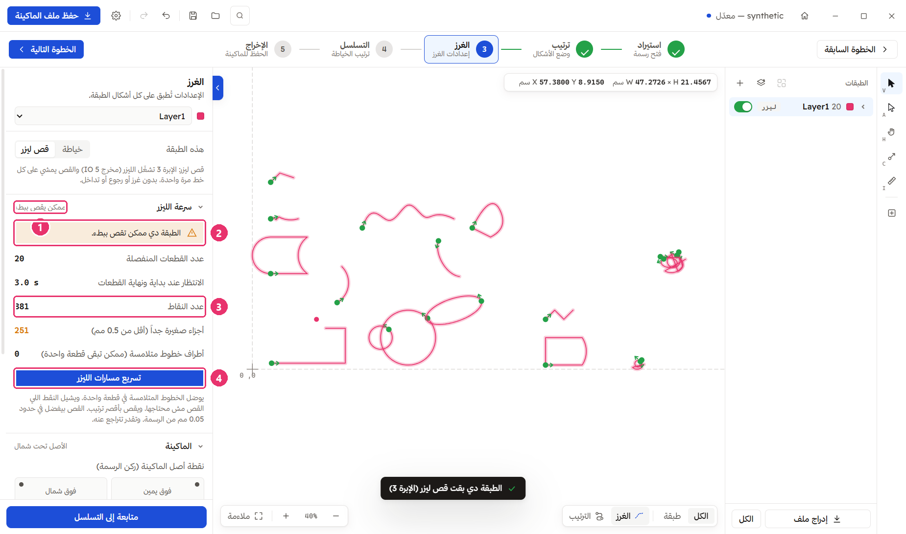
طبقة ليزر قد تقص ببطء
الحالة: «ممكن يقص ببطء».
التحذير: «الطبقة دي ممكن تقص ببطء.».
سبب البطء يظهر بلون كهرماني: هنا 251 جزءاً أصغر من 0.5 مم. وفي القسم أيضاً: عدد القطعات المنفصلة، والانتظار عند بداية ونهاية القطعات بالثواني، وعدد النقاط، وأطراف خطوط متلامسة (ممكن تبقى قطعة واحدة).
تسريع مسارات الليزر: يصل الخطوط المتلامسة في قطعة واحدة، ويحذف النقاط التي لا يحتاجها القص، ويرتب القطع بأقصر مسار. يبقى القص في حدود 0.05 مم من الرسمة، ويمكن التراجع عنه.
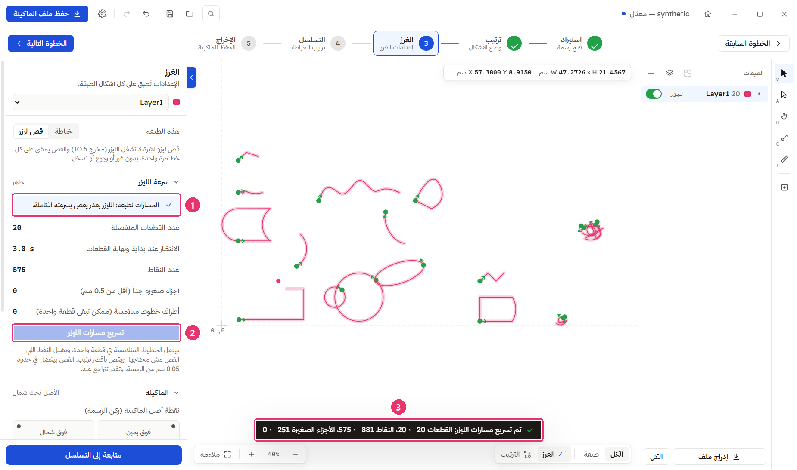
بعد تسريع مسارات الليزر
الحالة الجديدة: «المسارات نظيفة: الليزر يقدر يقص بسرعته الكاملة.».
الزر باهت لأنه لم يعد هناك ما يُصلح.
إشعار بالنتيجة: عدد القطعات والنقاط والأجزاء الصغيرة قبل الإصلاح وبعده (هنا انخفضت النقاط من 881 إلى 575 والأجزاء الصغيرة من 251 إلى 0).
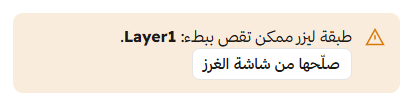
التنبيه نفسه في مرحلة الإخراج
إذا انتقلت إلى مرحلة الإخراج وفي الشغلانة طبقة ليزر بطيئة، يظهر تنبيه «طبقة ليزر ممكن تقص ببطء:» مع اسم الطبقة وزر صلّحها من شاشة الغرز ينقلك إلى المكان الصحيح.
ملاحظةتضيف الماكينة أوقات انتظار عند بداية كل قطعة ليزر ونهايتها (من الأوامر الافتراضية: 100 و50 مللي ثانية)، ولذلك يقل زمن القص كلما قل عدد القطع المنفصلة. هذه الأوقات تظهر في المحاكاة وفي الوقت المتوقع.
9مرحلة التسلسل: ترتيب الخياطة والمحاكاة
ترتيب خياطة الأشكال يحدد المسافة التي تقطعها الإبرة بين الأشكال دون خياطة («حركات الانتقال»)، وبالتالي يؤثر على وقت الشغلانة. في هذه المرحلة ترتّب الأشكال وتشاهد محاكاة للخياطة.
9.1قائمة ترتيب الخياطة
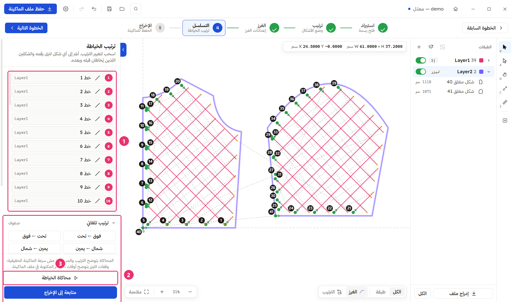
مرحلة التسلسل
قائمة الترتيب: كل الأشكال بترتيب خياطتها، ولكل شكل رقمه بلون طبقته، وصورة مصغرة، واسمه، واسم طبقته. الأشكال في الطبقات المتوقفة عن الخياطة تظهر باهتة. اسحب أي صف وأفلته فوق صف آخر أو تحته لتغيير الترتيب، واضغط عليه لتحديد الشكل.
ترتيب تلقائي: انظر 9.2.
محاكاة الخياطة: انظر 9.3.
على الرسمة يظهر رقم كل شكل عند نقطة بدايته، وخطوط متقطعة رمادية تمثل حركات الانتقال من نهاية كل شكل إلى بداية التالي. عندما تتقارب نقاط البداية، يُخفي البرنامج بعض الأرقام حتى لا تتكدس فوق بعضها.
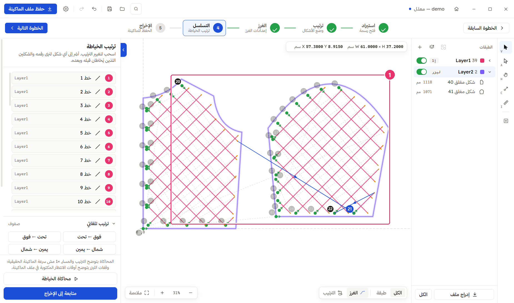
الإشارة إلى شكل تُبرز رقمه والشكلين قبله وبعده
(1) عند إيقاف المؤشر فوق شكل في الرسمة أو فوق صفه في القائمة، يظهر رقمه بدائرة زرقاء أكبر (هنا 21)، ورقما الشكلين اللذين يُخاطان قبله وبعده (20 و22)، وحركتا الانتقال منه وإليه بخطين أزرقين مع أسهم الاتجاه، بينما تبهت بقية الأرقام. يحدث الشيء نفسه عند تحديد شكل (أو حتى ثلاثة أشكال).
اختصارات الترتيب للأشكال المحددة (في أي مرحلة): Ctrl+] خطوة لاحقة، Ctrl+[ خطوة سابقة، Ctrl+Shift+] آخر الترتيب، Ctrl+Shift+[ أول الترتيب. ويمكن إظهار الأرقام في المراحل الأخرى بزر الترتيب في شريط العرض أو Ctrl+H.
9.2الترتيب التلقائي وحركات الانتقال
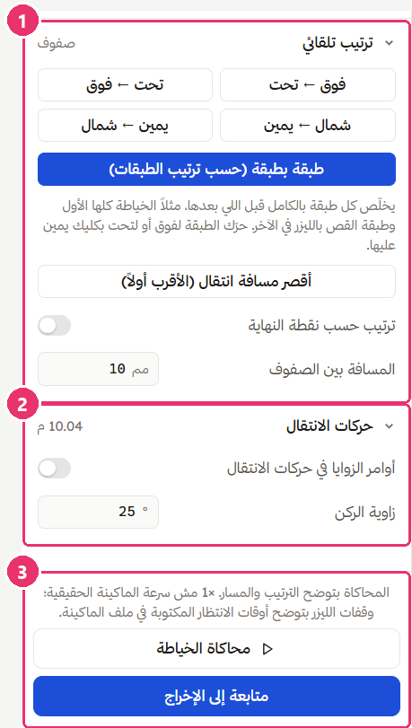
أقسام الترتيب التلقائي وحركات الانتقال
ترتيب تلقائي:
أربعة أزرار للترتيب في صفوف: فوق ← تحت، تحت ← فوق، شمال ← يمين، يمين ← شمال. عرض الصف تحدده المسافة بين الصفوف (10 مم)، وترتيب حسب نقطة النهاية يرتب حسب نهايات الأشكال بدل بداياتها.
طبقة بطبقة (حسب ترتيب الطبقات): يخيط كل طبقة بالكامل قبل التي تليها، مثلاً الخياطة كلها أولاً ثم طبقة القص بالليزر أخيراً. غيّر ترتيب الطبقات من القائمة المختصرة للطبقة أو بسحبها.
أقصر مسافة انتقال (الأقرب أولاً): بعد كل شكل يختار أقرب شكل إليه.
يظهر إشعار «تم تحديث ترتيب الخياطة» بعد كل ترتيب، ويمكن التراجع عنه.
حركات الانتقال: بجانب العنوان مجموع مسافة الانتقال بالمتر (يقل كلما كان الترتيب أفضل). أوامر الزوايا في حركات الانتقال مع زاوية الركن (25°) يضيف أوامر الزوايا أثناء الانتقال.
محاكاة الخياطة.
متابعة إلى الإخراج.
9.3محاكاة الخياطة
اضغط محاكاة الخياطة لمشاهدة الإبرة وهي تتحرك على الأشكال بالترتيب. يظهر شريط تحكم أسفل الرسمة:
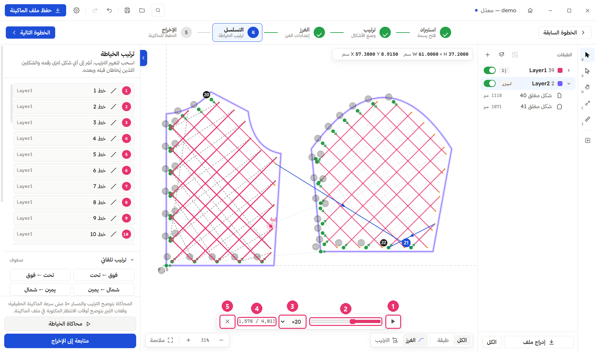
المحاكاة أثناء التشغيل
تشغيل / إيقاف مؤقت.
شريط الموضع: اسحبه للانتقال إلى أي لحظة من الخياطة.
سرعة المحاكاة: ½× و1× و2× و5× و20×. هذه سرعة العرض فقط، و1× لا تمثل سرعة الماكينة الحقيقية.
العداد: رقم نقطة الإبرة الحالية من المجموع.
إغلاق المحاكاة (أو Esc).
الخيط المخيط يُرسم بلون طبقته، والانتقالات بخط متقطع رمادي، وتظهر علامة «إبرة» عند رأس الخياطة. في طبقات الليزر يظهر شعاع متوهج مع كلمة «ليزر»، ويتوقف العرض عند بداية كل قطعة ليزر بمقدار الانتظار المكتوب في ملف الماكينة مع عبارة «الليزر منتظر». عند الانتهاء يظهر إشعار «انتهت المحاكاة». الانتقال إلى مرحلة أخرى يوقف المحاكاة.
ملاحظةإذا لم توجد طبقة مفعّلة فيها أشكال تظهر رسالة «لا يوجد ما يُخاط بعد: شغّل طبقة فيها أشكال.».
10مرحلة الإخراج: برنامج الماكينة والحفظ
المرحلة الأخيرة: تراجع ما سيُكتب في ملف الماكينة، وتضيف الأوامر الخاصة، ثم تحفظ الملف أو تصدّره بصيغ أخرى.
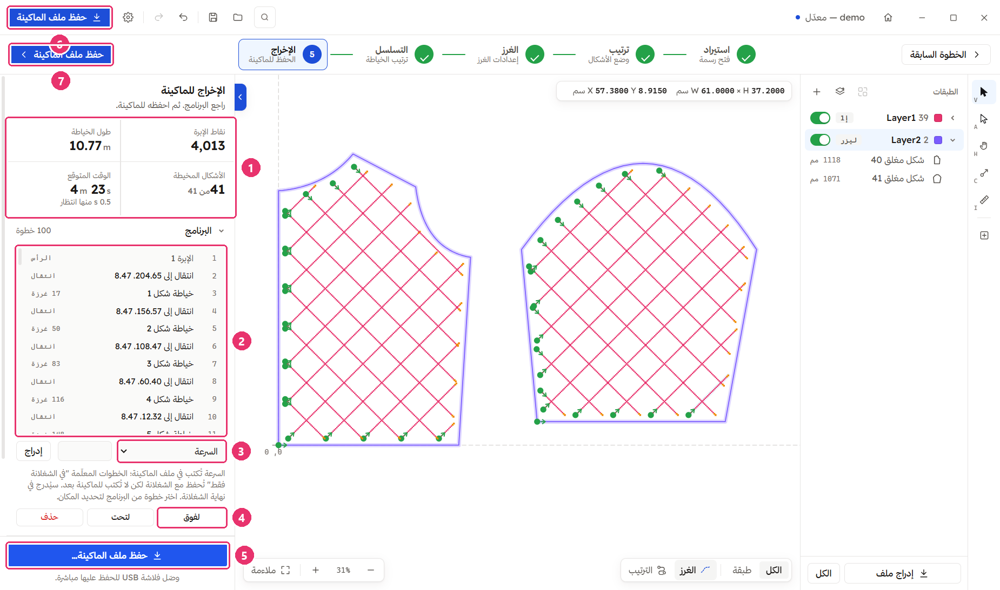
مرحلة الإخراج
الإحصاءات (10.1).
البرنامج: قائمة خطوات برنامج الماكينة (10.2).
إدراج أمر: اختر الأمر واكتب قيمته ثم إدراج.
لفوق / لتحت / حذف: لتحريك أمر أضفته أو حذفه.
حفظ ملف الماكينة…: وتحته أزرار الحفظ على الفلاشة إن وُجدت (10.6).
زر الحفظ في الشريط العلوي يعمل العمل نفسه من أي مرحلة.
زر الخطوة التالية يصبح في هذه المرحلة حفظ ملف الماكينة.
10.1الإحصاءات
نقاط الإبرة: عدد المواضع التي تنزل فيها الإبرة.
طول الخياطة: بالمتر.
الأشكال المخيطة: عدد الأشكال التي ستُخاط من إجمالي الأشكال (الأشكال في الطبقات المتوقفة لا تُحسب).
الوقت المتوقع: تقدير للمدة حسب السرعة، وتحته أوقات الانتظار المضمنة فيها (مثل انتظار الليزر).
10.2البرنامج وإدراج الأوامر
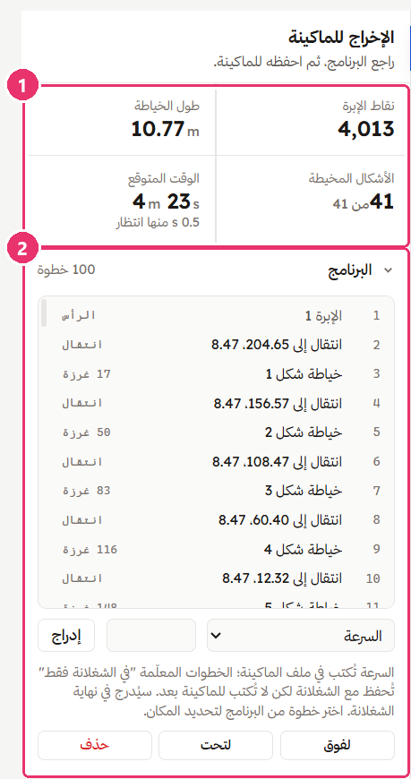
الإحصاءات والبرنامج
(1) الإحصاءات. (2) البرنامج: كل خطوة لها رقم ونص ووسم بنوعها: «الرأس» (اختيار الإبرة)، «انتقال» (حركة بلا خياطة)، «غرزة» (خياطة شكل مع عدد غرزه)، وغيرها. الخطوات التي تضيفها أنت تظهر باللون الأزرق.
لإضافة أمر:
اضغط على خطوة في البرنامج؛ سيُدرج الأمر قبل الشكل الذي تخصه هذه الخطوة (أو في نهاية الشغلانة إن لم تختر خطوة). الملاحظة تحت القائمة تذكر مكان الإدراج.
اختر الأمر من القائمة: السرعة، انتظار، مخرج IO، مدخل IO، محور Z، محور U، علامة، تكرار، موضع العمود الرئيسي، قص الخيط، رفع الدواسة، إنزال الدواسة، إزاحة XY، رجوع لنقطة الأصل، إيقاف مؤقت، تغيير الإبرة.
اكتب القيمة (مثل 1200 للسرعة، أو 500 مللي ثانية للانتظار، أو «2 on» لتشغيل المخرج 2).
اضغط إدراج.
تنبيهفي هذا الإصدار تُكتب في ملف الماكينة أوامر السرعة والانتظار ومخرج IO ومحور Z فقط. بقية الأوامر تظهر بوسم «في الشغلانة فقط»: تُحفظ مع ملف الشغلانة ولا تُكتب في ملف الماكينة بعد. السرعة في ملف الماكينة محصورة بين 100 و3500 لفة/دقيقة.
لتحريك أمر أضفته أو حذفه اضغط عليه ثم لفوق أو لتحت أو حذف. لا يمكن تحريك الخطوات التي ينشئها البرنامج أو حذفها، وتظهر رسالة «حدد أمراً أضفته (يظهر باللون الأزرق).».
10.3الأوامر التلقائية والسرعة والمخارج
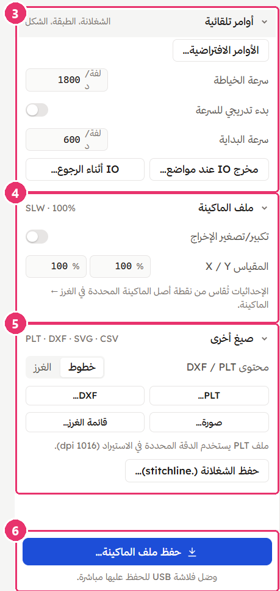
الأوامر التلقائية وملف الماكينة والصيغ الأخرى
أوامر تلقائية:
الأوامر الافتراضية…: انظر أدناه.
سرعة الخياطة (1800 لفة/د): تُكتب في ملف الماكينة.
بدء تدريجي للسرعة مع سرعة البداية (600): يظهر في البرنامج بوسم «في الشغلانة فقط».
مخرج IO عند مواضع… وIO أثناء الرجوع….
ملف الماكينة:تكبير/تصغير الإخراج مع المقياس X / Y بالنسبة المئوية (100% = بلا تغيير). يُطبَّق على ملف الماكينة فقط دون تغيير الرسمة. الإحداثيات تُقاس من نقطة أصل الماكينة (8.3).
صيغ أخرى: انظر 10.5.
أزرار الحفظ (10.6).
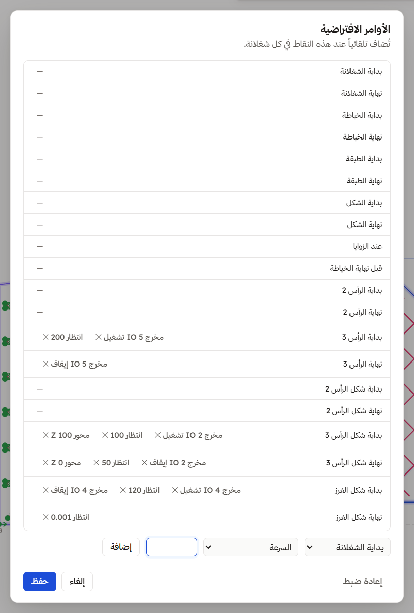
نافذة «الأوامر الافتراضية»
الأوامر الافتراضية تُضاف تلقائياً عند نقاط محددة من كل شغلانة: بداية الشغلانة ونهايتها، وبداية الخياطة ونهايتها، وبداية كل طبقة وشكل ونهايتهما، وعند الزوايا، وقبل نهاية الخياطة، وبداية الرأس 2 والرأس 3 ونهايتهما، وبداية أشكال كل رأس ونهايتها.
القيم المضبوطة مسبقاً تخص الليزر وأشكال الغرز، مثل: «بداية الرأس 3»: تشغيل المخرج 5 وانتظار 200؛ «بداية شكل الرأس 3»: تشغيل المخرج 2، انتظار 100، محور Z 100.
لإضافة أمر: اختر الحدث والأمر واكتب القيمة ثم إضافة.
لحذف أمر: اضغط عليه (عليه علامة ×).
إعادة ضبط يعيد القيم الأصلية، وحفظ يحفظ التغييرات.
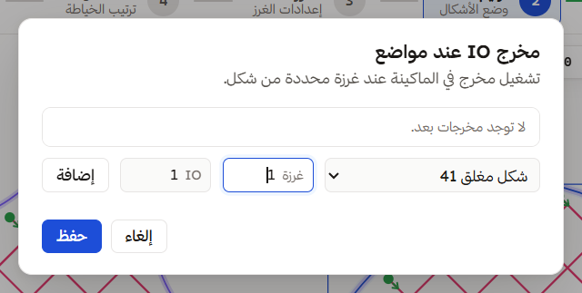
نافذة «مخرج IO عند مواضع»
مخرج IO عند مواضع: يشغّل مخرجاً من مخارج الماكينة عند غرزة معينة من شكل معين. اختر الشكل، واكتب رقم الغرزة ورقم المخرج، ثم إضافة، ثم حفظ. يمكن حذف أي سطر بزر إزالة.
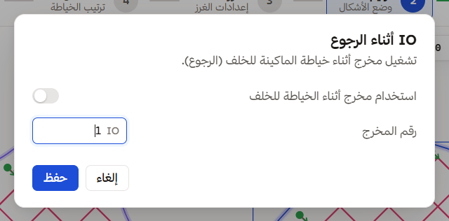
نافذة «IO أثناء الرجوع»
IO أثناء الرجوع: يشغّل مخرجاً أثناء خياطة الماكينة للخلف (غرز الرجوع). فعّل استخدام مخرج أثناء الخياطة للخلف واكتب رقم المخرج ثم حفظ.
تنبيهأرقام المخارج وأوامرها تختلف بين الماكينات. لا تغيّر الأوامر الافتراضية أو المخارج إلا إذا كنت تعرف توصيلات ماكينتك؛ أوامر خاطئة قد تشغّل أجزاء غير مقصودة من الماكينة.
10.5التصدير بصيغ أخرى
من قسم صيغ أخرى. اختر أولاً محتوى DXF / PLT: خطوط (الأشكال كما هي) أو الغرز (نقاط الإبرة).
الزر
الملف الناتج
الاستخدام
PLT…
اسم.plt
ملف راسمة HPGL بالدقة المحددة في الاستيراد.
DXF…
اسم.dxf
رسمة تفتحها برامج التصميم.
صورة…
اسم.svg
صورة للرسمة والغرز تُفتح في المتصفح.
قائمة الغرز…
اسم_stitches.csv
جدول (إكسل) بكل نقطة إبرة: الترتيب والشكل والطبقة والإبرة ورقم الغرزة وإحداثياتها ونوعها.
تظهر نافذة الحفظ في ويندوز مع اسم مقترح من اسم الشغلانة، وبعد الحفظ يظهر إشعار مثل «تم تصدير 41 شكل إلى demo.plt».
10.6حفظ ملف الماكينة
تأكد أن طبقة واحدة على الأقل مفعّلة للخياطة، وإلا تظهر رسالة «لا يوجد ما يُخاط: شغّل طبقة واحدة على الأقل.».
اضغط حفظ ملف الماكينة… (أو Ctrl+Alt+E، أو زر الشريط العلوي، أو الخطوة التالية في مرحلة الإخراج).
في نافذة الحفظ اختر المكان؛ الاسم المقترح هو اسم الشغلانة بامتداد .slw.
اضغط «حفظ» (Save).
يظهر إشعار «تم حفظ ملف الماكينة demo.slw (4555 سجل)» مثلاً.
اسم ملف الماكينةيُشتق الاسم المقترح من اسم الشغلانة بعد حذف المسافات والرموز (تبقى الحروف والأرقام والشرطة - والشرطة السفلية _)، ويُقصّ إلى 12 حرفاً، لأن الماكينات القديمة لا تقبل الأسماء الطويلة. إن لم يبقَ شيء يُستخدم الاسم job.
الحفظ مباشرة على فلاشة USB
عندما توصّل فلاشة USB، يظهر أسفل لوحة الإخراج زر حفظ على الفلاشة E: لكل فلاشة متصلة (حرف القرص حسب جهازك). الضغط عليه يحفظ الملف مباشرة في جذر الفلاشة دون نافذة حفظ، ويذكر الإشعار المسار الكامل. إن لم توجد فلاشة يظهر بدل الزر سطر «وصّل فلاشة USB للحفظ عليها مباشرة.». إذا فُصلت الفلاشة قبل الضغط تظهر رسالة «الفلاشة لم تعد متصلة.».
تنبيهالحفظ على الفلاشة يستبدل أي ملف بالاسم نفسه في جذرها دون سؤال. انتظر ظهور إشعار الحفظ قبل نزع الفلاشة، واستخدم «إخراج الجهاز بأمان» من ويندوز.
تم اختبار كتابة ملف الماكينة والتصدير ورسالة «الفلاشة لم تعد متصلة» أثناء إعداد الدليل؛ لم تكن فلاشة متصلة بجهاز الفحص، فزر الحفظ على الفلاشة موصوف من شيفرة البرنامج.
11الحفظ والتصدير والنسخ الاحتياطي
في البرنامج ثلاثة أنواع من الملفات الناتجة، ولكل منها غرض مختلف. فهم الفرق بينها يحميك من فقدان العمل.
الملف الذي تقرؤه الماكينة. يمكن فتحه في البرنامج لكنه لا يحتفظ بالطبقات والإعدادات كما هي.
التصدير
.dxf .plt .svg .csv
قسم صيغ أخرى
للبرامج الأخرى أو للمراجعة.
نصيحةاحفظ ملف الشغلانة دائماً بجانب ملف الماكينة. إذا احتجت تعديلاً لاحقاً، افتح ملف الشغلانة وليس ملف الماكينة.
11.2حفظ الشغلانة
Ctrl+S: أول مرة تظهر نافذة الحفظ (الاسم المقترح اسم الشغلانة)، وبعدها يحفظ في الملف نفسه مباشرة.
Ctrl+Shift+S: «حفظ باسم» في ملف جديد.
بعد الحفظ يصبح اسم الشغلانة هو اسم الملف، وتختفي علامة «معدّل»، ويُضاف الملف إلى الملفات الأخيرة.
11.3سؤال حفظ التعديلات
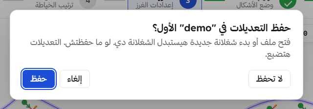
سؤال حفظ التعديلات قبل فتح ملف آخر
إذا كانت في الشغلانة تعديلات غير محفوظة، يسألك البرنامج قبل أي عملية تستبدلها: فتح ملف، أو فتح ملف من القائمة الأخيرة، أو إفلات ملف، أو شغلانة جديدة، أو إغلاق البرنامج.
حفظ: يحفظ الشغلانة ثم يكمل العملية.
لا تحفظ: يتجاهل التعديلات ويكمل.
إلغاء أو Esc: لا يحدث شيء.
لا يُطرح السؤال إذا كانت الشغلانة رسمة فتحتها للتو ولم تعدّلها، لأن الملف الأصلي يحتوي كل شيء.
11.4الحفظ التلقائي واستعادة العمل
مع كل تعديل يكتب البرنامج نسخة من الشغلانة في %APPDATA%\Stitchline\autosave.stitchline. عند فتح البرنامج مرة أخرى تعود الشغلانة كما تركتها، حتى لو لم تحفظها أو أُغلق البرنامج فجأة، وتظهر في الصفحة الرئيسية في بطاقة متابعة.
تنبيهإذا أغلقت البرنامج واخترت لا تحفظ، تُحذف النسخة التلقائية ويبدأ البرنامج في المرة القادمة بشغلانة جديدة. الحفظ التلقائي ليس بديلاً عن حفظ ملف الشغلانة؛ هو نسخة واحدة تُستبدل مع كل تعديل.
التراجع والإعادة
كل تعديل على الشغلانة يمكن التراجع عنه بـ Ctrl+Z وإعادته بـ Ctrl+Shift+Z، بما في ذلك الحذف والنسخ وتغيير الإعدادات والترتيب وتسريع الليزر. سحب الأشكال بالفأرة يُعد خطوة تراجع واحدة.
نصائح للنسخ الاحتياطي
احفظ ملفات الشغلانة في مجلد خاص بكل عميل أو موديل، وانسخه دورياً إلى قرص خارجي أو تخزين سحابي.
قبل تعديل كبير، احفظ نسخة باسم جديد (Ctrl+Shift+S).
12سير العمل العملي
أمثلة كاملة لأكثر المهام شيوعاً، خطوة بخطوة. استخدم الرسمة التجريبية demo.plt المرفقة مع البرنامج إن أردت التدرب.
12.1من الرسمة إلى ملف الماكينة على الفلاشة
الهدف: تجهيز ملف SLW لرسمة خياطة بسيطة ونقله إلى الماكينة. المتطلبات: رسمة DXF أو PLT، وفلاشة USB. نقطة البداية: الصفحة الرئيسية.
افتح الرسمة: اضغط فتح رسمة واختر الملف، أو اسحبه إلى النافذة. تظهر الرسمة في مرحلة الترتيب.
راجع المقاس: اضغط Ctrl+A واقرأ العرض والارتفاع في شريط المقاس أعلى الرسمة (بالسنتيمتر). إن كان المقاس خاطئاً في ملف PLT فراجع الدقة (5.5) أو استخدم المقياس (5.6).
نظّف الرسمة إن لزم: من قسم الرسمة كلها اضغط حذف التداخلات وربط الخطوط < 2 مم.
انتقل إلى الغرز (الخطوة التالية): اختر كل طبقة وراجع طول الغرزة وإعدادات الرجوع (8.1، 8.2).
اختر نقطة أصل الماكينة المناسبة لماكينتك من قسم الماكينة (8.3).
انتقل إلى التسلسل: اضغط أقصر مسافة انتقال (الأقرب أولاً)، ثم محاكاة الخياطة للتأكد من الترتيب (9.3).
انتقل إلى الإخراج: راجع نقاط الإبرة والوقت المتوقع.
احفظ ملف الشغلانة بـ Ctrl+S لتستطيع تعديلها لاحقاً.
وصّل الفلاشة واضغط زر حفظ على الفلاشة أسفل لوحة الإخراج (أو حفظ ملف الماكينة… واختر الفلاشة في نافذة الحفظ).
التحقق من النجاح: يظهر إشعار «تم حفظ ملف الماكينة…» مع عدد السجلات، ويظهر الملف في الفلاشة بامتداد .slw. انزع الفلاشة بأمان وافتح الملف على الماكينة.
12.2شغلانة خياطة وقص ليزر معاً
الهدف: تطريز القطعة على الإبرة 1 ثم قص حدودها بالليزر على الإبرة 3، في ملف واحد. المتطلبات: ماكينة برأس ليزر على الإبرة 3، ورسمة فيها خطوط التطريز وخطوط الحدود.
افتح الرسمة. إن كانت خطوط الحدود في طبقة مستقلة (مثل Layer2 في الرسمة التجريبية) فانتقل للخطوة 3.
وإلا: حدد خطوط الحدود كلها (Ctrl + ضغطة على كل منها، أو مستطيل تحديد)، ثم Ctrl+G، واختر قص ليزر وعمل الطبقة (7.3). انتقل للخطوة 4.
في مرحلة الغرز اختر طبقة الحدود واضغط قص ليزر (8.5).
افتح قسم سرعة الليزر؛ إن ظهر تحذير «ممكن يقص ببطء» فاضغط تسريع مسارات الليزر.
في مرحلة التسلسل اضغط طبقة بطبقة (حسب ترتيب الطبقات)، وتأكد أن طبقة الليزر هي الأخيرة في لوحة الطبقات (حرّكها لتحت من قائمتها المختصرة إن لزم)، حتى يتم القص بعد انتهاء التطريز.
شاهد المحاكاة: يجب أن يظهر التطريز أولاً ثم شعاع الليزر مع توقفات قصيرة عند بداية كل قطعة.
احفظ الشغلانة ثم ملف الماكينة.
التحقق: في برنامج الإخراج تظهر خطوة اختيار «الإبرة 3» بعد خطوات التطريز، وفي الإحصاءات عدد ثوانٍ «منها انتظار».
12.3تصحيح مقاس القطع بعد خياطة تجريبية
الهدف: القطع المخيطة خرجت أصغر أو أكبر من الرسمة. نقطة البداية: الشغلانة مفتوحة.
اختر مسافة واضحة في الرسمة (مثلاً ضلع طوله 100 مم) وقِسها على القطعة المخيطة.
في مرحلة الاستيراد افتح تكبير/تصغير الرسمة واضغط من قياس… (5.6).
اكتب الطولين واختر المحاور ثم استخدم هذا المقياس.
اضغط تطبيق المقياس الآن. يتغير مقاس الرسمة كلها.
احفظ ملف الماكينة من جديد وخِط قطعة تجريبية أخرى للتأكد.
بديللتكبير ملف الماكينة فقط دون تغيير الرسمة، استخدم تكبير/تصغير الإخراج في مرحلة الإخراج (10.3). ولتطبيق المقياس على كل الرسومات التي تفتحها لاحقاً فعّل تطبيق عند فتح ملف.
12.4إضافة إيقاف مؤقت أو تغيير سرعة داخل الشغلانة
في مرحلة الإخراج اضغط على خطوة الشكل الذي تريد تغيير السرعة قبله (مثلاً «خياطة شكل 5»).
اختر السرعة واكتب 900، ثم إدراج. يظهر الأمر باللون الأزرق قبل الشكل.
لإعادة السرعة بعد الشكل، اضغط خطوة الشكل التالي وأدرج السرعة 1800.
للتحقق راجع البرنامج، واحفظ ملف الماكينة.
تنبيهأمر إيقاف مؤقت يظهر في البرنامج بوسم «في الشغلانة فقط» ولا يُكتب في ملف الماكينة في هذا الإصدار (10.2). استخدم بدلاً منه انتظار بالمللي ثانية إذا احتجت توقفاً قصيراً.
13الإعدادات والتخصيص
نافذة الإعدادات تتحكم في شكل الواجهة: اللغة والسمة والخط وحجم النص وما يظهر من أجزاء النافذة. لا تؤثر أي منها على ملف الماكينة.
13.1فتح الإعدادات
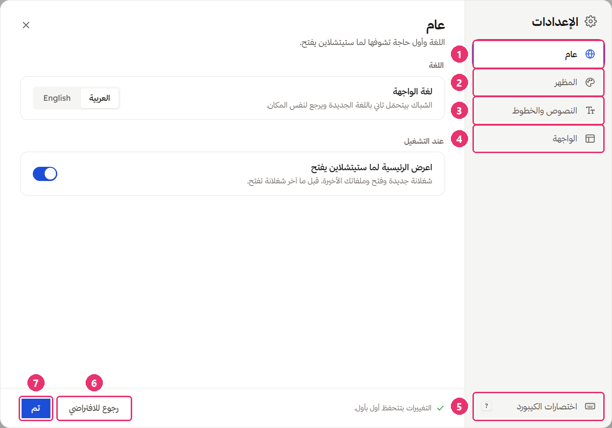
نافذة الإعدادات (قسم «عام»)
افتحها بزر الترس في الشريط العلوي أو في الصفحة الرئيسية، أو بـ Ctrl+,.
عام: اللغة والصفحة الرئيسية (13.2).
المظهر: السمة واللون والحركة (13.3).
النصوص والخطوط: الخط وحجم النص (13.3).
الواجهة: حجم الواجهة وما يظهر منها (13.4). تنقّل بين الأقسام بالضغط أو بالسهمين لأعلى ولأسفل.
اختصارات الكيبورد: يفتح قائمة الاختصارات.
رجوع للافتراضي: يعيد كل إعدادات الواجهة إلى أصلها.
تم: يغلق النافذة (أو Esc).
ملاحظةكل تغيير يُطبَّق فوراً ويُحفظ تلقائياً («التغييرات بتتحفظ أول بأول»)؛ لا يوجد زر حفظ.
13.2عام
لغة الواجهة: العربية أو English. تُعاد تهيئة النافذة باللغة الجديدة وتعود إلى المكان نفسه. يمكن أيضاً التبديل من زر اللغة في الصفحة الرئيسية.
اعرض الرئيسية لما ستيتشلاين يفتح (مفعّل افتراضياً).
13.3المظهر والنصوص
قسم «المظهر»
السمة: فاتح أو داكن أو زي ويندوز (الافتراضي: يتبع إعداد ويندوز). للتبديل السريع: Ctrl+Shift+L.
اللون الأساسي: لون الأزرار والتحديد والمرحلة الحالية؛ أزرق (الافتراضي) أو بنفسجي أو فيروزي أو أخضر أو برتقالي أو رمادي. لا يغيّر ألوان الغرز ولا خطوط الليزر.
حركة ناعمة: حركة اللوحات والأزرار عند الظهور والاختفاء. أوقفها في الأجهزة البطيئة.
قسم «النصوص والخطوط»
الخط: Thmanyah Sans (الافتراضي)، أو Readex Pro، أو Segoe UI، أو Tahoma. كل بطاقة تعرض نموذجاً عربياً ولاتينياً.
حجم النص: صغير، عادي (الافتراضي)، كبير، أكبر.
نص أثقل: حروف أسمك لقراءة أسهل.
معاينة: نموذج يُظهر أثر اختياراتك فوراً.
السمة الداكنة
13.4الواجهة
قسم «الواجهة»: ما يظهر على الشاشة
حجم الواجهة: 90% أو 100% (الافتراضي) أو 110% أو 125% أو 150%. يكبّر الأزرار واللوحات والنصوص معاً، وتبقى الرسمة واضحة.
لوحة الطبقات ولوحة المرحلة والمقاس والموضع وشريط العرض وشريط التكبير: إظهار هذه الأجزاء أو إخفاؤها (كلها ظاهرة افتراضياً).
الشبكة على الرسمة: خطوط المليمتر خلف الأشكال. مخفية افتراضياً في هذا الإصدار؛ فعّلها إن كنت تحتاجها للمحاذاة بالعين.
مفاتيح الاختصار على الأزرار: الحروف الصغيرة بجانب الأزرار والأدوات.
نصيحةإذا اختفى جزء من النافذة ولم تعرف السبب، افتح الإعدادات واضغط رجوع للافتراضي.
14البحث عن أي أداة
إن لم تتذكر مكان أمر ما، ابحث عنه باسمه بالعربية أو الإنجليزية.
البحث عن «عكس»
اضغط Ctrl+K أو زر البحث (العدسة) في الشريط العلوي.
اكتب جزءاً من اسم الأداة في (1)، مثل «غرز» أو «عكس» أو «USB». لا يهم شكل الألف ولا التاء المربوطة ولا التشكيل.
تظهر الأدوات المطابقة (2)(3) وبجانب كل منها اسم المرحلة التي تنتمي إليها، وفي الأسفل عددها (4) (هنا 2 من 82 أداة).
اختر بالأسهم ثم Enter، أو اضغط بالفأرة.
ينتقل البرنامج إلى المرحلة المناسبة وينفذ الأمر أو يفتح نافذته. بعض النتائج تنقلك فقط إلى المرحلة التي فيها الإعداد (مثل «طول الغرزة»). Esc يغلق البحث.
15اختصارات لوحة المفاتيح
اختصارات البرنامج تشبه اختصارات Adobe Illustrator. تعمل الحروف بغض النظر عن لغة لوحة المفاتيح (العربية أو الإنجليزية). اضغط ? أو F1 في أي وقت لعرض القائمة داخل البرنامج.
نافذة «اختصارات الكيبورد» داخل البرنامج
ملف
الاختصار
الوظيفة
Ctrl+O
فتح رسمة أو شغلانة
Ctrl+S
حفظ الشغلانة
Ctrl+Shift+S
حفظ الشغلانة باسم…
Ctrl+Alt+E
حفظ ملف الماكينة
Ctrl+N
شغلانة جديدة
Ctrl+Shift+P
إدراج رسمة في الشغلانة
Ctrl+Shift+H
الصفحة الرئيسية
تعديل
الاختصار
الوظيفة
Ctrl+Z
تراجع
Ctrl+Shift+Z
إعادة
Ctrl+A
تحديد الكل
Ctrl+Shift+A
إلغاء التحديد
Esc
إلغاء التحديد، أو الخروج من الأداة الحالية أو من المحاكاة أو إغلاق النافذة المفتوحة
Ctrl+C / Ctrl+X
نسخ / قص المحدد (داخل البرنامج)
Ctrl+V
لصق في منتصف المنظر
Ctrl+F / Ctrl+B
لصق في المكان نفسه، يُخاط آخراً / أولاً
Alt أثناء السحب
نسخ أثناء السحب
Ctrl+D
تكرار آخر تحريك أو تدوير أو عكس أو تغيير مقاس
Delete
حذف المحدد
الأسهم / Shift+الأسهم
تحريك المحدد بمقدار الخطوة / عشرة أضعافها
Ctrl+J
ربط أطراف الخطوط
Ctrl+Alt+R
عكس الاتجاه
Ctrl+G
عمل طبقة من المحدد
Ctrl+Shift+G
حذف الطبقة الحالية مع الاحتفاظ بأشكالها
Ctrl+] / Ctrl+[
الخياطة بعد خطوة / قبل خطوة
Ctrl+Shift+] / [
الخياطة في الآخر / في الأول
أدوات
الاختصار
الوظيفة
V
التحديد: تحريك الأشكال كاملة وتغيير مقاسها
A
التحديد المباشر: تحريك مسار واحد
Shift / Alt مع المقابض
تغيير المقاس مع الحفاظ على النسب / من المنتصف
Alt مع مستطيل التحديد
تحديد الأشكال الواقعة بالكامل داخله فقط
H / ضغط مستمر على Space
تحريك المنظر
R
التدوير: اكتب الزاوية
O / Shift+O
عكس يمين–شمال / فوق–تحت
S
تغيير الحجم: اكتب المقاس
Enter
التحريك: اكتب المسافة
C
تحديد نقطة البداية
I
القياس
M
إضافة شكل
عرض ومراحل
الاختصار
الوظيفة
Ctrl+0
ملاءمة الرسمة كلها
Ctrl+1
الحجم الحقيقي (100%)
Ctrl++ / Ctrl+−
تكبير / تصغير
Ctrl+Y
إظهار الغرز
Ctrl+H
إظهار ترتيب الخياطة
Shift+Tab
إخفاء / إظهار لوحة المرحلة
Ctrl+K
البحث عن أي أداة
Ctrl+Shift+L
فاتح / داكن
Ctrl+,
الإعدادات
? / F1 / Ctrl+Alt+Shift+K
اختصارات لوحة المفاتيح
1 … 5
المراحل: استيراد، ترتيب، الغرز، التسلسل، الإخراج
Page Down / Page Up
الخطوة التالية / السابقة
ملاحظةالاختصارات ذات الحرف الواحد لا تعمل أثناء الكتابة في حقل؛ اضغط Esc أو انقر على الرسمة أولاً. في الصفحة الرئيسية يعمل عدد محدود منها: فتح، شغلانة جديدة، الرجوع للشغلانة، السمة، والاختصارات. البرنامج يعمل على ويندوز فقط، فلا توجد اختصارات لأنظمة أخرى.
16حل المشكلات
المشكلات الأكثر احتمالاً ورسائل البرنامج التي تظهر معها، مع خطوات الحل. الرسائل مكتوبة كما تظهر في الواجهة العربية.
16.1مشكلات فتح الملفات
رسالة صيغة غير مدعومة
العَرَض / الرسالة
السبب المحتمل
الحل
«لا يمكن فتح ملفات XYZ. الصيغ المدعومة: DXF, AI, PLT, PRT, DST, DSB and SLW.»
امتداد الملف غير مدعوم.
صدّر الرسمة من برنامج التصميم بإحدى الصيغ المدعومة، ويُفضّل DXF.
«لا يمكن فتح ملفات EDI بعد. احفظ الرسمة كـ DXF وافتحها.»
صيغ برامج أخرى (EDI، TZF، HLW، DIG، KLW) غير مدعومة في هذا الإصدار.
افتح الرسمة في برنامجها الأصلي واحفظها DXF.
«هذا الملف لا يحتوي على رسمة.»
الملف فارغ أو لا يحتوي خطوطاً يقرؤها البرنامج.
افتح الملف في برنامج التصميم وتأكد أن فيه خطوطاً (وليس صوراً أو نصوصاً فقط).
رسالة تبدأ بـ «No drawing paths were found in this AI file…»
ملف إليستريتور بصيغة حديثة لا تحتوي مسارات مقروءة.
احفظ الملف من إليستريتور بصيغة «Illustrator 8» أو DXF.
«This is not an SLW machine file.»
ملف بامتداد .slw لكنه ليس ملف ماكينة صالحاً أو تالف.
تأكد من مصدر الملف، أو افتح الرسمة الأصلية بدلاً منه.
الرسمة تظهر بمقاس أكبر أو أصغر قليلاً من المتوقع
دقة ملف PLT مختلفة (1000 بدلاً من 1016 أو العكس).
غيّر الدقة في مرحلة الاستيراد ثم افتح الملف مرة أخرى (5.5).
الرسمة ضخمة جداً أو بعيدة عن الأصل، ورسالة «الرسمة كبيرة جداً…»
وحدات الرسمة خاطئة (مثلاً متر بدل مليمتر) أو نقاط بعيدة جداً.
صحح وحدات الرسمة في برنامج التصميم، أو استخدم المقياس (5.6).
«الشغلانة دي هيكون فيها أكثر من 2,000,000 نقطة إبرة…»
طول غرزة صغير جداً مع رسمة كبيرة، أو مقاس خاطئ.
راجع مقاس الرسمة، وزد طول الغرزة.
خطوط مكررة تُخاط مرتين، أو خطوط مقطّعة كثيرة
عيوب في الرسمة الأصلية.
استخدم حذف التداخلات وربط أطراف الخطوط ودمج النقاط القريبة (6.6).
16.2مشكلات التعديل والحفظ
العَرَض / الرسالة
السبب
الحل
«حدد شكلاً أولاً — اضغط عليه في الرسمة أو في الطبقات.»
الأمر يعمل على أشكال محددة ولا يوجد تحديد.
حدد شكلاً ثم أعد الأمر.
«أدخل رقماً.»
حقل رقمي يحتوي نصاً.
اكتب رقماً فقط (الفاصلة والنقطة مقبولتان).
«لا يوجد ما يُخاط: شغّل طبقة واحدة على الأقل.»
كل الطبقات متوقفة عن الخياطة.
فعّل مفتاح الخياطة لطبقة واحدة على الأقل في لوحة الطبقات.
«الفلاشة لم تعد متصلة.»
فُصلت الفلاشة بعد ظهور زرها.
أعد توصيلها وانتظر ظهور الزر من جديد، أو استخدم حفظ ملف الماكينة….
لا يظهر زر الحفظ على الفلاشة
ويندوز لا يرى الفلاشة كقرص قابل للإزالة.
تأكد من ظهورها في مستكشف ويندوز. قائمة الفلاشات تتحدّث بعد أي تعديل على الشغلانة. أو اضغط حفظ ملف الماكينة… واختر الفلاشة من نافذة الحفظ.
زرا التراجع والإعادة باهتان
لا يوجد ما يُتراجع عنه (مثلاً بعد فتح ملف).
طبيعي.
جزء من النافذة اختفى (الطبقات، شريط التكبير…)
أُخفي من الإعدادات أو بـ Shift+Tab.
أظهره من الإعدادات ← الواجهة، أو رجوع للافتراضي (13.4).
الاختصارات لا تعمل
المؤشر داخل حقل كتابة، أو نافذة حوار مفتوحة، أو الصفحة الرئيسية ظاهرة.
اضغط Esc أو انقر على الرسمة ثم أعد المحاولة.
«انقطع الاتصال بالبرنامج. أغلق هذا الشباك وشغّل ستيتشلاين مرة أخرى.»
خطأ داخلي نادر بين الواجهة ومحرك البرنامج.
أغلق البرنامج وأعد تشغيله؛ تعود الشغلانة من الحفظ التلقائي (11.4). إن تكرر الأمر مع ملف معين فاحتفظ بالملف وأبلغ الدعم الفني.
البرنامج لا يفتح أو تظهر نافذة فارغة
مكوّن WebView2 غير مثبّت أو تالف.
ثبّت «Microsoft Edge WebView2 Runtime» من موقع مايكروسوفت أو أعد تشغيل مثبّت البرنامج. إن استمرت المشكلة فهي تحتاج تدخلاً تقنياً.
16.3نتائج خياطة غير متوقعة
الخياطة تبدأ من مكان خاطئ: راجع نقطة البداية والاتجاه (6.4)، ونقطة أصل الماكينة (8.3).
القطع مقلوبة أو معكوسة على الماكينة: غالباً نقطة أصل الماكينة لا تطابق ماكينتك؛ جرّب الركن الصحيح، أو استخدم العكس (6.3).
الخيط يُفك في الأطراف: زد غرز البداية وغرز النهاية وتكرارها في قسم الرجوع (8.2).
الزوايا غير حادة أو مشدودة: فعّل التبطيء أو الغرز الكثيفة عند الزوايا، أو عدّل زاوية الركن (8.2).
وقت الشغلانة طويل: رتّب بأقصر مسافة انتقال (9.2)، وأصلح مسارات الليزر (8.5).
16.4مشكلات معروفة في هذا الإصدار
لوحظت أثناء إعداد الدليل واختبار البرنامج، وتم الإبلاغ عنها لفريق التطوير:
المشكلة
البديل
زر الإبرة في صف الطبقة (لوحة الطبقات) لا يُظهر قائمة اختيار الإبرة؛ تُغلق فور فتحها.
غيّر الإبرة من رأس الخياطة في مرحلة الغرز (8.1).
قراءة أداة القياس لا تظهر داخل الشريط الداكن في الواجهة العربية.
بدّل الواجهة مؤقتاً إلى الإنجليزية، أو اقرأ المقاس من شريط المقاس بعد تحديد الشكل (6.9).
في نافذة «شغلانة جديدة» يظهر زر المقاس الجاهز معكوس الترتيب (800 × 1000) في الواجهة العربية، بينما المقصود العرض 1000 والارتفاع 800.
اعتمد على حقلي عرض الطاولة وارتفاع الطاولة تحت الزر.
17الأسئلة الشائعة
ما الفرق بين حفظ الشغلانة وحفظ ملف الماكينة؟
ملف الشغلانة (.stitchline) نسختك القابلة للتعديل بكل الإعدادات، وملف الماكينة (.slw) هو ما تقرؤه الماكينة. احفظ الاثنين (11.1).
نسيت أن أحفظ وأُغلق البرنامج. هل ضاع عملي؟
غالباً لا. عند فتح البرنامج تعود الشغلانة من الحفظ التلقائي وتظهر في بطاقة «متابعة»، إلا إذا اخترت «لا تحفظ» عند الإغلاق (11.4).
كيف أنقل الملف إلى الماكينة؟
وصّل فلاشة واضغط زر «حفظ على الفلاشة» أسفل مرحلة الإخراج، ثم انقل الفلاشة إلى الماكينة (10.6).
لماذا اسم ملف الماكينة مختلف عن اسم الشغلانة؟
البرنامج يحذف المسافات والرموز ويقصّ الاسم إلى 12 حرفاً لتتوافق مع الماكينات (10.6). اختر أسماء قصيرة بالحروف والأرقام.
كيف أجعل الخياطة تبدأ من نقطة معينة؟
اضغط C ثم اضغط على الشكل في تلك النقطة، أو ضغطة يمين ← «ابدأ الخياطة من هنا» (6.4).
كيف أمنع طبقة من الخياطة دون حذفها؟
أوقف مفتاح الخياطة في صفها بلوحة الطبقات (7.1).
هل يمكن خياطة جزء من خط بطريقة مختلفة؟
نعم، من «أجزاء (زجزاج…)»: زجزاج أو رجوع أو طول خاص لمقطع محدد بالمليمتر (6.5).
كيف أجعل القص بالليزر يحدث بعد الخياطة؟
اجعل طبقة الليزر آخر طبقة، ثم في مرحلة التسلسل اضغط «طبقة بطبقة» (12.2).
الواجهة صغيرة على شاشتي. ماذا أفعل؟
من الإعدادات ← الواجهة اختر حجم 110% أو 125% أو 150%، أو كبّر حجم النص من «النصوص والخطوط» (13).
كيف أغيّر لغة البرنامج؟
من زر «English» في الصفحة الرئيسية، أو الإعدادات ← عام ← لغة الواجهة (13.2).
هل محاكاة الخياطة بسرعة الماكينة الحقيقية؟
لا. هي لعرض الترتيب والمسار فقط؛ استخدم «الوقت المتوقع» في مرحلة الإخراج لتقدير المدة.
هل يحتاج البرنامج إنترنت؟
لا يحتاجه للعمل. قد يحتاجه برنامج التثبيت مرة واحدة لتنزيل مكوّن WebView2 إذا لم يكن موجوداً.
18مسرد المصطلحات
الشغلانة Job
مهمة العمل الكاملة: الرسمة وطبقاتها وإعداداتها وترتيبها. تُحفظ في ملف .stitchline.
ملف الماكينة Machine file, SLW
الملف الذي تقرؤه ماكينة خياطة الباترون، بصيغة برنامج Sew_Soft.
الطبقة Layer
مجموعة أشكال تشترك في الإبرة وإعدادات الغرز واللون.
الشكل Shape
خط أو مسار أو شكل مغلق أو نقطة في الرسمة.
شكل مغلق / مفتوح Closed / open shape
المغلق يعود إلى نقطة بدايته (مثل الدائرة)، والمفتوح له طرفان (مثل الخط).
الإبرة / الرأس Needle, head
رأس الخياطة في الماكينة (1 أو 2 أو 3). الإبرة 3 قد تكون رأس ليزر.
نقطة الإبرة Needle position
موضع تنزل فيه الإبرة في القماش؛ كل غرزة بين نقطتين.
طول الغرزة Stitch length
المسافة بين نقطتي إبرة متتاليتين بالمليمتر.
الرجوع (التقفيل) Back-tack
غرز ترجع فيها الإبرة على الخط في البداية أو النهاية لتثبيت الخيط.
التداخل Overlap
غرز تكمل بعد العودة إلى بداية شكل مغلق لتثبيته.
الزجزاج Zigzag
غرز متعرجة يميناً ويساراً على طول الخط.
الطول الخاص والمزدوج Special / double length
أطوال غرز بديلة لأجزاء معينة أو لغرز متبادلة.
حركة الانتقال Travel move
حركة الإبرة من نهاية شكل إلى بداية التالي دون خياطة.
نقطة أصل الماكينة Machine origin
الركن الذي تُقاس منه كل الإحداثيات في ملف الماكينة.
تعويض الخلوص Backlash compensation
تصحيح صغير لفراغ ميكانيكي في محاور الماكينة عند تغيير الاتجاه.
الدقة dpi
عدد النقاط في البوصة في ملفات PLT/PRT؛ تحدد مقاس الرسمة عند فتحها.
النقطة المرجعية Reference point
نقطة تُستخدم لمحاذاة الشغلانة على الماكينة.
مخرج IO Output IO
مخرج كهربائي في الماكينة يشغّل جهازاً (مثل الليزر أو الهواء).
محور Z Z axis
الحركة الرأسية لرأس الماكينة.
المحاكاة Simulation
عرض متحرك لترتيب الخياطة ومسار الإبرة على الشاشة.
التصدير Export
حفظ نسخة من الرسمة أو الغرز بصيغة لبرنامج آخر (DXF، PLT، SVG، CSV).
الحفظ التلقائي Autosave
نسخة يكتبها البرنامج مع كل تعديل ليعود العمل بعد إغلاق مفاجئ.